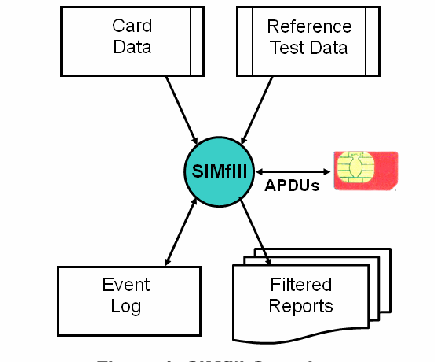
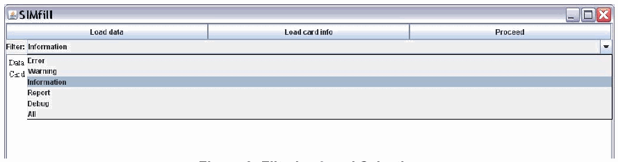

NIST IR 7658 日本語訳
英語タイトル : Guide to SIMfill Use and Development日本語タイトル : SIMfill の使用と開発のガイド
公開日 : 2010-02-24
原文URL : https://csrc.nist.gov/pubs/ir/7658/final
翻訳編集 : 自動生成（有志による非公式の日本語訳）, 原文取得日 : 2026-10-31, 訳文 : 505 / 548 ブロック
[要約] NIST IR 7658 は、モバイルフォレンジックツールの復元能力を評価する手段として、識別モジュールにテストデータを書き込むために NIST が開発した、概念実証のオープンソースアプリケーション SIMfill の設計と構成を詳細に説明する報告書です。SIMfill には、他のテストケースを作成するためのベースラインとして、テストデータの初期セットも付属しています。本書は、提供されるソフトウェアとテストデータを十分な知識をもって使用し、試験できるよう、インストールと操作、データとスキーマの定義、設計と実装を説明します。特定のニーズを満たすために、提供されるプログラムとデータを変更し、拡張する選択肢も示しています。
［NIST のロゴ。公的な標章のため、この非公式サイトには掲載していません。原本 PDF を参照してください。］
NIST IR-7658
NIST IR-7658
Guide to SIMfill Use and Development
SIMfill の使用と開発のガイド
Wayne Jansen Aurélien Delaitre
Wayne Jansen Aurélien Delaitre
NIST IR-7658
NIST IR-7658
Guide to SIMfill Use and Development
SIMfill の使用と開発のガイド
Wayne Jansen Aurélien Delaitre
Wayne Jansen Aurélien Delaitre
COMPUTER SECURITY
コンピュータセキュリティ
Computer Security Division Information Technology Laboratory National Institute of Standards and Technology Gaithersburg, MD 20899-8930
コンピュータセキュリティ部門 情報技術研究所 米国国立標準技術研究所 Gaithersburg, MD 20899-8930
February 2010
2010 年 2 月
U.S. Department of Commerce Gary Locke, Secretary
米国商務省 Gary Locke 長官
National Institute of Standards and Technology Patrick D. Gallagher, Director
米国国立標準技術研究所 Patrick D. Gallagher 所長
Reports on Computer Systems Technology
コンピュータシステム技術に関する報告書
The Information Technology Laboratory (ITL) at the National Institute of Standards and Technology (NIST) promotes the U.S. economy and public welfare by providing technical leadership for the Nation’s measurement and standards infrastructure. ITL develops tests, test methods, reference data, proof of concept implementations, and technical analysis to advance the development and productive use of information technology. ITL’s responsibilities include the development of technical, physical, administrative, and management standards and guidelines for the cost-effective security and privacy of sensitive unclassified information in Federal computer systems. This Interagency Report discusses ITL’s research, guidance, and outreach efforts in computer security, and its collaborative activities with industry, government, and academic organizations.
米国国立標準技術研究所（NIST）の情報技術研究所（ITL）は、国の計測・標準インフラストラクチャに技術的なリーダーシップを提供することで、米国の経済と公共の福祉を促進しています。ITL は、情報技術の開発と生産的な利用を進めるため、試験、試験方法、参照データ、概念実証の実装、技術的分析を開発しています。ITL の責務には、連邦コンピュータシステムにおける機密扱いではない機微な情報について、費用対効果の高いセキュリティとプライバシーを実現するための、技術的、物理的、行政的、管理的な標準とガイドラインの開発が含まれます。本内部報告書は、ITL のコンピュータセキュリティに関する研究、ガイダンス、アウトリーチ活動と、産業界、政府、学術機関との協力活動について論じています。
National Institute of Standards and Technology Interagency Report 58 pages (2010)
米国国立標準技術研究所省庁間報告書 58 ページ（2010 年）
Certain commercial entities, equipment, or materials may be identified in this document in order to describe an experimental procedure or concept adequately. Such identification is not intended to imply recommendation or endorsement by the National Institute of Standards and Technology, nor is it intended to imply that the entities, materials, or equipment are necessarily the best available for the purpose.
本文書では、実験の手順や概念を適切に説明するために、特定の商業的主体、機器、または材料に言及している場合があります。こうした言及は、米国国立標準技術研究所による推奨や支持を意味するものではなく、それらの主体、材料、または機器がその目的に最適であることを意味するものでもありません。
Abstract
概要
SIMfill is a proof-of-concept, open source, application developed by NIST to populate identity modules with test data, as a way to assess the recovery capability of mobile forensic tools. An initial set of test data is also provided with SIMfill as a baseline for creating other test cases. This report describes the design and organization of SIMfill in sufficient detail to allow informed use and experimentation with the software and test data provided, including the option to modify and extend the program and data provided to meet specific needs.
SIMfill は、モバイルフォレンジックツールの復元能力を評価する手段として、識別モジュールにテストデータを書き込むために NIST が開発した、概念実証のオープンソースアプリケーションです。SIMfill には、他のテストケースを作成するためのベースラインとして、テストデータの初期セットも付属しています。本報告書は、提供されるソフトウェアとテストデータを十分な知識をもって使用し、試験できるよう、SIMfill の設計と構成を詳細に説明します。これには、特定のニーズを満たすために、提供されるプログラムとデータを変更し、拡張する選択肢も含まれます。
Keywords: Computer Forensics; Reference Materials; Tool Validation
キーワード: コンピュータフォレンジック、参照資料、ツールの検証
Table of Contents
目次
1. Introduction
1. はじめに
Reference materials are vital in forensic laboratories and similar settings, where quality assurance is a major issue. Reference material refers to material, sufficiently homogeneous and stable with respect to one or more specified properties, which has been established to be fit for its intended use in a measurement process. One area of application is in the validation of forensic tools to identify inaccuracies that might exist and establish overall suitability for use. New versions of forensic software tools are issued regularly by a tool manufacturer to broaden the range of existing functions, provide new features, and correct identified problems. After the laboratory successfully validates a tool, it can be safely put into use for its intended purpose.
参照資料は、品質保証が重要な課題となる、フォレンジックラボラトリーや同様の環境で不可欠です。参照資料とは、1 つ以上の指定された特性に関して十分に均質かつ安定であり、測定プロセスにおける意図された用途に適していることが確認された資料を指します。適用分野の 1 つは、フォレンジックツールの検証であり、存在し得る不正確さを特定し、使用に対する全体的な適合性を確認します。フォレンジックソフトウェアツールの新しいバージョンは、既存の機能の範囲を広げ、新しい機能を提供し、特定された問題を修正するために、ツールの製造者によって定期的にリリースされます。ラボラトリーがツールの検証に成功すれば、そのツールを意図した目的に安全に使用できます。
Reference materials, such as handsets and identity modules containing populated data, are typically used to validate forensic tools targeting mobile handheld devices. However, populating such devices with data that exhibit the needed properties, including a broad range of character sets, data structures, and file content, is difficult. Populating a device with a representative data to create suitable reference material can be done in various ways:
データが書き込まれたハンドセットや識別モジュールなどの参照資料は、通常、携帯型モバイルデバイスを対象とするフォレンジックツールの検証に使用されます。しかし、広範な文字セット、データ構造、ファイルの内容など、必要な特性を示すデータをそのようなデバイスに書き込むことは困難です。適切な参照資料を作成するために、代表的なデータをデバイスに書き込む方法は、さまざまあります。
•Manually – Using manual means to populate a group of individual items onto devices is typically a time-consuming and error-prone process, since it is normally done through the user interface of a handset.
•手動 – 個々の項目の集合を手作業でデバイスに書き込むことは、通常はハンドセットのユーザーインターフェースを通じて行われるため、一般に時間がかかり、誤りも起こしやすいプロセスです。
•Semi-automated – Using a semi-automated process typically preserves manually populated data for reuse by copying or transferring the data to another device with the same or very similar characteristics.
•半自動 – 半自動のプロセスを使用すると、通常は、同じか非常によく似た特性を持つ別のデバイスにデータをコピーまたは転送することで、手作業で書き込んだデータを再利用のために保持できます。
•Automated – Using an automated means to populate devices through a well-defined interface can greatly expedite validation, once the initial effort to construct the test data is completed.
•自動 – 十分に定義されたインターフェースを通じてデバイスにデータを書き込む自動の手段を使用すると、テストデータを構築する最初の作業が完了した後は、検証を大幅に迅速化できます。
SIMfill is a proof-of-concept application developed to expedite validation by populating certain devices automatically with test data, to create reference material for tool assessment.1 SIMfill works with Subscriber Identity Modules (SIMs) found in many present-day mobile phones. Universal Mobile Telecommunications System (UMTS) SIMs (USIMs) being deployed in 3G networks are often backwards-compatible with SIMs and able to be populated by SIMfill as well [3GPP09c]. (U)SIMs are highly standardized devices with well-defined interfaces. The vast majority of forensic tools for cell phones provides the functionality to recover (U)SIM-resident data, making SIMfill a potentially useful means for use in assessing their capabilities.
SIMfill は、特定のデバイスにテストデータを自動で書き込んで、ツール評価のための参照資料を作成することにより、検証を迅速化するために開発された概念実証アプリケーションです1。SIMfill は、現在の多くの携帯電話に搭載されている加入者識別モジュール（SIM）で動作します。3G ネットワークに展開されている Universal Mobile Telecommunications System（UMTS）の SIM（USIM）は、SIM との後方互換性を持つことが多く、SIMfill でデータを書き込むこともできます [3GPP09c]。(U)SIM は、十分に定義されたインターフェースを持つ、高度に標準化されたデバイスです。携帯電話向けのフォレンジックツールの大半は、(U)SIM に存在するデータを復元する機能を備えているため、SIMfill はそれらの能力を評価するのに役立つ可能性のある手段です。
This report describes the design and organization of SIMfill in sufficient detail to allow informed use and experimentation with the software distribution, including the option to modify the program and test dataset provided to meet specific needs. The reader is presumed to have a fundamental understanding of the SIM file system (e.g., see [3GPP07, Jan09]). The reader is advised to review the disclaimer file included in the distribution before attempting to use SIMfill or any of its components.
本報告書は、ソフトウェア配布物を十分な知識をもって使用し、試験できるよう、SIMfill の設計と構成を詳細に説明します。これには、特定のニーズを満たすために、提供されるプログラムとテストデータセットを変更する選択肢も含まれます。読者は、SIM ファイルシステムの基本的な理解があることを前提としています（たとえば [3GPP07, Jan09] を参照）。SIMfill またはそのいずれかのコンポーネントを使用する前に、配布物に含まれる免責事項のファイルを確認すべきです。
2. Overview
2. 概要
SIMfill is open source software written in the Java programming language. It was developed using Eclipse 3.2.1 on Windows XP SP3 and uses the Jaccal library to communicate with the (U)SIM card. Jaccal is compliant with the Personal Computer/Smart Card (PC/SC) interface specifications and is also open source.
SIMfill は、Java プログラミング言語で書かれたオープンソースソフトウェアです。Windows XP SP3 上の Eclipse 3.2.1 を使って開発され、(U)SIM カードとの通信に Jaccal ライブラリを使用します。Jaccal は、Personal Computer/Smart Card（PC/SC）インターフェース仕様に準拠しており、同じくオープンソースです。
Two different types of input data are needed for SIMfill to perform its tasks, as illustrated in Figure 1:
図 1 に示すように、SIMfill が処理を実行するには、2 種類の異なる入力データが必要です。
•A data file containing the test cases to be written to the Elementary Files (EFs) of interest in the SIM file system.
•SIM ファイルシステムの対象となる基本ファイル（EF）に書き込むテストケースを含む、データファイル。
•A card file containing any codes needed to satisfy the various access conditions of a target (U)SIM and establish the access required to populate EFs of interest.
•対象の (U)SIM のさまざまなアクセス条件を満たし、対象の EF への書き込みに必要なアクセスを確立するために必要なコードを含む、カードファイル。
The baseline test data and card data provided with SIMfill are represented as Extensible Markup Language (XML) files. XML schema definition files are also provided that specify in detail how the input data are to be represented. The choice of XML representation allows the input to be easily modified by users to suit their needs using a freely available XML editor, such as Microsoft’s XML Notepad.
SIMfill に付属するベースラインのテストデータとカードデータは、Extensible Markup Language（XML）ファイルで表現されています。入力データをどのように表現するかを詳細に規定する、XML スキーマ定義ファイルも付属しています。XML による表現を選択したことで、ユーザーは、Microsoft の XML Notepad など、自由に利用できる XML エディターを使って、入力データを必要に応じて容易に変更できます。
The test data and card data must be both well-formed and valid XML documents. The former means that the syntax meets the XML standard, while latter means that the well-formed content also conforms to the XML schema definitions provided. By definition, all XML editors perform syntax checks. Many of them also perform XML schema validation dynamically during editing, which greatly simplifies the task of preparing conforming documents. SIMfill also checks the card and data files during execution.
テストデータとカードデータは、整形式であり、かつ妥当な XML 文書でなければなりません。前者は、構文が XML 標準を満たしていることを意味し、後者は、整形式の内容も付属の XML スキーマ定義に適合していることを意味します。定義上、すべての XML エディターは構文チェックを行います。その多くは、編集中に XML スキーマの検証も動的に行うため、適合する文書を準備する作業が大幅に簡単になります。SIMfill も、実行中にカードファイルとデータファイルをチェックします。

構成図です。上部の 2 つの文書の箱「Card Data」と「Reference Test Data」から、中央の青緑の円「SIMfill」へ線が引かれています。SIMfill と右側の赤い SIM カードは「APDUs」と書かれた両矢印で結ばれています。下では、SIMfill から箱「Event Log」と、重なったページ「Filtered Reports」へ矢印が出ています。
Figure 1: SIMfill Overview
図 1: SIMfill の概要
The dataset provided with SIMfill can be used to get started. Note that the data content to be populated is kept separate from device programming commands. Instead, populating an identity module is data driven, guided entirely by the reference test data specified and done in accordance with the established access conditions.
SIMfill に付属するデータセットは、使い始める際に利用できます。書き込むデータの内容は、デバイスのプログラミングコマンドとは別に保持されることに注意してください。識別モジュールへの書き込みは、データ駆動型であり、指定された参照テストデータのみによって導かれ、確立されたアクセス条件に従って行われます。
During the population process, SIMfill makes detailed entries to an event log, including the Application Protocol Data Units (APDUs) exchanged and success or failure of the operation, as shown in Figure 1. Various levels of filtering can be selected for the entries in the event log to allow the contents of the log to be viewed at different levels of detail and captured as a report.
書き込みプロセスの間、SIMfill は、図 1 に示すように、交換された Application Protocol Data Unit（APDU）や操作の成否など、詳細な記録をイベントログに残します。イベントログのエントリには、さまざまなレベルのフィルタリングを選択でき、ログの内容を異なる詳細度で表示し、報告書として取得できます。
Table 1 list the abbreviations for EFs that are used in the Global System for Mobile Communications (GSM) specifications [e.g., 3GPP07, 3GPP09a, 3GPP09b] and are able to be specified by name in the reference test data. The required access conditions needed to write to an EF given in the body of the table are listed across the top of the table:
表 1 に、Global System for Mobile Communications（GSM）仕様 [たとえば 3GPP07, 3GPP09a, 3GPP09b] で使用され、参照テストデータで名前によって指定できる EF の略語を示します。表の本体に示す EF に書き込むために必要なアクセス条件は、表の上部に並べて示しています。
•Card Holder Verification 1 (CHV1) - Update can be performed only after a successful verification of the user’s PIN, or if PIN verification is disabled
•Card Holder Verification 1（CHV1）- 更新は、ユーザーの PIN の検証に成功した後、または PIN の検証が無効にされている場合にのみ実行できます。
•Card Holder Verification 2 (CHV2) - Update can be performed only after a successful verification of the user’s PIN2, or if PIN2 verification is disabled
•Card Holder Verification 2（CHV2）- 更新は、ユーザーの PIN2 の検証に成功した後、または PIN2 の検証が無効にされている場合にのみ実行できます。
•Administrative (ADM) - Update can be performed only after prescribed requirements for administrative access are fulfilled
•Administrative（ADM）- 更新は、管理アクセスに対して規定された要件が満たされた後にのみ実行できます。
•Never - Access of the file over the SIM interface to the handset is forbidden.2
•Never - SIMインターフェースを介してハンドセットからファイルにアクセスすることは禁止されています。2
Table 1: Elementary Files Populated by SIMfill
表 1: SIMfill が書き込む基本ファイル
| CHV1 | CHV2 | ADM | NEVER |
|---|---|---|---|
| ADN | FDN | IMSI | ICCID |
| EXT1 | EXT2 | SDN | |
| LND | EXT3 | ||
| SMS | SPN | ||
| LOCI | AD | ||
| LOCIGPRS | PHASE | ||
| MSISDN | SST | ||
| FPLMN | |||
| PLMNsel |
| CHV1 | CHV2 | ADM | NEVER |
|---|---|---|---|
| ADN | FDN | IMSI | ICCID |
| EXT1 | EXT2 | SDN | |
| LND | EXT3 | ||
| SMS | SPN | ||
| LOCI | AD | ||
| LOCIGPRS | PHASE | ||
| MSISDN | SST | ||
| FPLMN | |||
| PLMNsel |
In addition to these named EFs, a generic EF is supported that can be used to identify and populate the contents of any file in the directory structure, using its16-bit file identifier.
これらの名前付き EF に加えて、ディレクトリ構造内の任意のファイルの内容を、その 16 ビットのファイル識別子を使って特定し、書き込むために使用できる、汎用の EF にも対応しています。
A common alternative to SIMfill for populating a (U)SIM is to use an editor tool designed specifically for smart cards or identity modules. Commands normally follow a simple format with keywords and parameters that the tool understands to perform associated activities, such as locating an EF in the file system of the module and writing data to it. The commands are translated into APDUs that are used to communicate with the identity module to carry out a function.
(U)SIM にデータを書き込む際の、SIMfill の一般的な代替手段は、スマートカードや識別モジュール専用に設計されたエディターツールを使用することです。コマンドは通常、ツールが理解するキーワードとパラメーターを持つ単純な形式に従い、モジュールのファイルシステム内の EF を探し、そこにデータを書き込むといった、関連する動作を実行します。コマンドは APDU に変換され、識別モジュールとの通信で、機能を実行するために使用されます。
Such editor tools often allow several commands to be linked together in a script and executed, using additional commands used to control the flow of execution. For example, if a referenced EF does not exist or a command fails for some other reason, the flow of control needs to be programmed to catch such conditions and debugged, much like a programming language. Gaining expertise with a new command language and preparing scripts is a drawback with this approach. Another drawback is the representation of data; typically the data to be populated is embedded within the script, making creation and update problematic.
このようなエディターツールでは、複数のコマンドをスクリプトにつなげて実行できる場合が多く、実行の流れを制御するための追加のコマンドも使用します。たとえば、参照されている EF が存在しない場合や、他の理由でコマンドが失敗した場合に、そのような状況を捕捉するために、制御の流れをプログラミングし、プログラミング言語のようにデバッグする必要があります。新しいコマンド言語の専門知識を身につけ、スクリプトを準備することは、この手法の欠点です。もう 1 つの欠点は、データの表現です。通常、書き込むデータはスクリプトに埋め込まれるため、作成と更新が困難になります。
3. Installation and Operation
3. インストールと操作
Installing SIMfill is fairly straightforward. The SIMfill distribution package can be found at http://csrc.nist.gov/groups/SNS/mobile_security/mobile_forensics_software.html. Download and unzip the file on the target computer. Please note the disclaimer for the distribution. Then, download and install the java runtime needed for SIMfill to execute, if it is not already installed. The java runtime can be found at http://www.java.com/en/download/index.jsp.
SIMfill のインストールは比較的簡単です。SIMfill の配布パッケージは、http://csrc.nist.gov/groups/SNS/mobile_security/mobile_forensics_software.html にあります。対象のコンピュータ上で、ファイルをダウンロードして解凍してください。配布物の免責事項を確認してください。次に、SIMfill の実行に必要な Java ランタイムがまだインストールされていない場合は、ダウンロードしてインストールしてください。Java ランタイムは、http://www.java.com/en/download/index.jsp にあります。
Jaccal, which is used to communicate with a smart card, is available from the sourceforge Web site at http://jaccal.sourceforge.net/. The Win32 binary release contains a collection of files, including Windows executables, Java Archive (jar) files and a Windows dynamic-link library (dll) file. Only the jaccal-core.jar and jaccal-pcsc.dll files from the Jaccal release package are required for SIMfill to function. Copy the jaccal-core.jar file to the same directory as the simfill-1.2.jar file. Also, copy the jaccal-pcsc.dll file to c:\windows\system32 or other system-path accessible dll directory. Since Jaccal works with a PC/SC-compatible smart card reader, one of them also must also be installed.
スマートカードとの通信に使用する Jaccal は、sourceforge の Web サイト http://jaccal.sourceforge.net/ から入手できます。Win32 バイナリのリリースには、Windows の実行ファイル、Java Archive（jar）ファイル、Windows のダイナミックリンクライブラリ（dll）ファイルなど、複数のファイルが含まれています。SIMfill が機能するために必要なのは、Jaccal のリリースパッケージのうち、jaccal-core.jar ファイルと jaccal-pcsc.dll ファイルだけです。jaccal-core.jar ファイルを simfill-1.2.jar ファイルと同じディレクトリにコピーしてください。また、jaccal-pcsc.dll ファイルを c:\windows\system32 またはシステムパスからアクセスできる他の dll ディレクトリにコピーしてください。Jaccal は PC/SC 互換のスマートカードリーダーで動作するため、そのようなリーダーも 1 台インストールする必要があります。
At this stage installation is finished. To execute SIMfill, simply navigate to the simfill.jar file and double click it.
この段階でインストールは完了です。SIMfill を実行するには、simfill.jar ファイルに移動して、ダブルクリックするだけです。
3.1 User Interface
3.1 ユーザーインターフェース
When SIMfill begins execution, it presents the user with a very simple interface illustrated in Figure 2. Its main functions are represented by three buttons across the top of the user interface.
SIMfill は、実行を開始すると、図 2 に示す非常に単純なインターフェースをユーザーに提示します。主な機能は、ユーザーインターフェースの上部に並ぶ 3 つのボタンで表されます。

SIMfill のウィンドウの画面です。上部に「Load data」「Load card info」と、灰色で無効の「Proceed」の 3 つのボタンがあります。その下に「Filter: Information」のドロップダウンと、ログの行「Data file 'D:\Code\SIMfill-1.2-predistrib\SIMfill-1.2\data\sim1.xml' validated.」があります。手前に「Open」のファイル選択ダイアログが開き、「Look In: cards」に GemXplore.xml、Standard.xml、USIMeraIII.xml が並び、空の「File Name」と「Files of Type: All Files」の欄、「Open」と「Cancel」のボタンがあります。
Figure 2: SIMfill User Interface
図 2: SIMfill のユーザーインターフェース
The two active buttons shown, labeled Load data, Load card info, allow the user to select and load the test data file to populate and the card information for the target (U)SIM to be populated. As selections are made, entries appear in the filtered event log window at the bottom of the user interface. During loading, the files are validated against their respective schema definitions and any errors are logged. In the Figure 2 example, the data file has been successfully loaded and validated, and the card information file is about to be selected.
Load data と Load card info というラベルの付いた、示されている 2 つの有効なボタンにより、ユーザーは、書き込むテストデータファイルと、書き込み対象の (U)SIM のカード情報を選択して読み込めます。選択を行うと、ユーザーインターフェース下部のフィルタリングされたイベントログのウィンドウにエントリが表示されます。読み込み中に、ファイルはそれぞれのスキーマ定義に対して検証され、エラーはログに記録されます。図 2 の例では、データファイルが正常に読み込まれて検証され、カード情報ファイルを選択しようとしているところです。
The population of the (U)SIM cannot begin until both files are successfully loaded and validated. Once that occurs, the third button, labeled Proceed, is activated to allow the population process to be initiated upon its selection. It is important to insert (U)SIM into the smart card reader before initiating the population process. Otherwise an error occurs immediately. Population of the (U)SIM should then proceed automatically through to completion and continue to fill the event log window with event entries.
(U)SIM への書き込みは、両方のファイルが正常に読み込まれ、検証されるまで開始できません。それが完了すると、Proceed というラベルの付いた 3 つ目のボタンが有効になり、選択すると書き込みプロセスを開始できます。書き込みプロセスを開始する前に、(U)SIM をスマートカードリーダーに挿入することが重要です。そうしないと、直ちにエラーが発生します。その後、(U)SIM への書き込みは、完了まで自動的に進むはずです。また、イベントログのウィンドウにはイベントエントリが追加され続けます。
Note that six levels of filtering are available to allow viewing of log entries at an appropriate level of detail, including a full listing of each APDU exchanged with the (U)SIM. The choice of filtering level is selectable via a pull-down menu, as illustrated in Figure 3. For speedier processing, it is recommended that detailed views of the event log (i.e., Report, Debug, and All) remain off until processing is completed. All log information is captured regardless of the filtering level, but displaying the details more fully during processing incurs delay. The filtering level can be changed to a more detailed view, once processing is completed, and the information captured for a report.
6 段階のフィルタリングが利用でき、(U)SIM と交換された各 APDU の完全な一覧を含め、適切な詳細度でログのエントリを表示できることに注意してください。フィルタリングのレベルは、図 3 に示すように、プルダウンメニューで選択できます。処理を速くするため、イベントログの詳細な表示（すなわち Report、Debug、All）は、処理が完了するまでオフのままにすることを推奨します。すべてのログ情報は、フィルタリングのレベルにかかわらず取得されますが、処理中に詳細をより完全に表示すると、遅延が生じます。処理が完了したら、フィルタリングのレベルをより詳細な表示に変更し、その情報を報告書として取得できます。

「Load data」「Load card info」「Proceed」のボタンがある SIMfill のウィンドウの画面です。「Filter:」のドロップダウンが開き、Error、Warning、Information（選択中）、Report、Debug、All のレベルが表示されています。
Figure 3: Filtering Level Selection
図 3: フィルタリングレベルの選択
When SIMfill completes processing it posts a notification in the event log and deactivates the button labeled Proceed. At the bottom of the user interface, two buttons labeled Clear and Save are activated. Typically the user selects a filtering level and reviews the events displayed. If satisfied with the results, the Save button can be used to capture the events as a report file for later use in the assessment process; otherwise, the Clear button can be used to empty the event log for another attempt, once corrections to the dataset are done.
SIMfill は、処理を完了すると、イベントログに通知を表示し、Proceed というラベルの付いたボタンを無効にします。ユーザーインターフェースの下部では、Clear と Save というラベルの付いた 2 つのボタンが有効になります。通常、ユーザーはフィルタリングのレベルを選択し、表示されたイベントを確認します。結果に満足であれば、Save ボタンを使って、評価プロセスで後に使用するために、イベントを報告書ファイルとして取得できます。そうでなければ、データセットの修正が完了した後に、Clear ボタンを使ってイベントログを空にし、再度試すことができます。
3.2 Reference Data
3.2 参照データ
The baseline reference data provided in the SIMfill distribution contains several predefined card information and test data files as a starting point. Three card files are included: GemXplore.xml, USIMeraIII.xml, and Standard.xml. They are shown in the pop-up menu in Figure 2. The GemXplorer.xml and USIMeraIII.xml are associated with specific developer SIMs, which can be used to enable ADM access, as well as CHV1 and CHV2 access, and provide the means to specify the broadest range of possible test cases, including all EFs listed in Table 1.3 They serve mainly as a model for preparing card files for other developer SIMs. Standard.xml is for use with common SIMs issued by cellular carriers. The file can be used to supply CHV1 and CHV2 values and gain access, if those settings are enabled.
SIMfill の配布物に含まれるベースラインの参照データには、出発点となる、定義済みのカード情報ファイルとテストデータファイルがいくつか含まれています。カードファイルは、GemXplore.xml、USIMeraIII.xml、Standard.xml の 3 つが含まれています。これらは、図 2 のポップアップメニューに表示されています。GemXplore.xml と USIMeraIII.xml は、特定の開発者向け SIM に関連付けられており、CHV1 と CHV2 によるアクセスだけでなく ADM アクセスも有効にでき、表 1 に示すすべての EF を含む、可能な限り広い範囲のテストケースを指定する手段を提供します3。これらは主に、他の開発者向け SIM のカードファイルを準備するためのモデルとして機能します。Standard.xml は、携帯電話事業者が発行する一般的な SIM で使用するためのものです。このファイルは、それらの設定が有効になっている場合に、CHV1 と CHV2 の値を供給してアクセスを得るために使用できます。
The reference test data includes three XML files, each containing data to populate a single (U)SIM. They are referred to as SIM1, SIM2, and SIM3. The SIM1.xml and SIM2.xml files contain the basic reference data cases, while SIM3.xml contains unconventional data cases used primarily for experimentation. Figure 4 illustrates the situation.
参照テストデータには、それぞれが 1 つの (U)SIM に書き込むデータを含む、3 つの XML ファイルが含まれています。これらは SIM1、SIM2、SIM3 と呼ばれます。SIM1.xml と SIM2.xml のファイルには、基本的な参照データのケースが含まれ、SIM3.xml には、主に試験に使用する、従来とは異なるデータのケースが含まれています。図 4 に、この状況を示します。

図です。箱「Reference Test Data」から木構造の線で 3 つの項目が出ています。「SIM1: 7-bit GSM encoding, including 2-septet extensions; English and French languages」と「SIM2: 16-bit UCS2 encoding, type 80; English and Japanese languages」は、波括弧で「Basic Reference Data」にまとめられています。「SIM3: Mixed encodings; English and other languages」には波括弧で「Experimental Data」と付いています。
Figure 4: Reference Test Data
図 4: 参照テストデータ
SIM1 and SIM2 are structured similarly and contain similar content. The test cases are intended to be fairly basic, but comprehensive. The main difference between the two files is that SIM1 uses the 7-bit GSM character set encoding, including 2-septet extended characters, while SIM2 uses the 16-bit Universal Character Set 2 (UCS2) type 80 encoding wherever possible. In keeping with the choice of languages supported by the respective character sets, the languages used for SIM1 are English and French and for SIM2 are English and Japanese. SIM1 encodes language preferences in the LP EF, and SIM2 uses the ELP EF. Both single segment and long multi-segment concatenated Short Message Service (SMS) messages are included in the reference data as well as Enhanced Message Service (EMS) messages containing black and white graphics. Appendix B illustrates the SIM1 and SIM2 data entries for ADN and SMS EFs, highlighting the similarities and characteristics of the content.
SIM1 と SIM2 は、同様の構造を持ち、同様の内容を含んでいます。テストケースは、かなり基本的ながら包括的であることを意図しています。2 つのファイルの主な違いは、SIM1 が 2 セプテットの拡張文字を含む 7 ビット GSM 文字セットのエンコーディングを使用するのに対し、SIM2 は可能な限り 16 ビットの Universal Character Set 2（UCS2）タイプ 80 のエンコーディングを使用することです。それぞれの文字セットが対応する言語の選択に合わせて、SIM1 で使用する言語は英語とフランス語、SIM2 で使用する言語は英語と日本語です。SIM1 は言語の選好を LP EF にエンコードし、SIM2 は ELP EF を使用します。参照データには、単一セグメントの Short Message Service（SMS）メッセージと、長い複数セグメントの連結 SMS メッセージの両方、および白黒のグラフィックスを含む Enhanced Message Service（EMS）メッセージが含まれています。付録 B に、ADN EF と SMS EF の SIM1 と SIM2 のデータエントリを示し、内容の類似点と特徴を強調しています。
SIM3 contains both 7-bit GSM and 16-bit UCS2 character sets. The data cases are more uncommon or unusual and some can be considered to be of an anti-forensic nature. Examples of the former include concatenated messages comprising more than four segments and ADN entries with an alpha-identifier encoded entirely in 7-bit GSM extended characters. Examples of the latter include LND entries with a circularly linked EXT1 extension chain, which can throw some forensic tools into an indefinite loop.
SIM3 には、7 ビット GSM 文字セットと 16 ビット UCS2 文字セットの両方が含まれています。データケースは、より珍しい、または異例なもので、一部はアンチフォレンジックの性質を持つと考えられます。前者の例には、4 つを超えるセグメントを含む連結メッセージや、アルファ識別子全体が 7 ビット GSM 拡張文字でエンコードされた ADN エントリがあります。後者の例には、循環的にリンクされた EXT1 拡張チェーンを持つ LND エントリがあり、これによって一部のフォレンジックツールが無限ループに陥る場合があります。
3.3 Population Process
3.3 書き込みプロセス
SIMfill populates a (U)SIM on an EF by EF basis in the order data appears in the test data file. It uses the codes (e.g., PIN1 and PIN2) given in the card data file to satisfy the access condition of the EFs and gain the ability to write to them. Before an EF gets populated, SIMfill erases its contents completely. Generally this means that all bits in the file are set to 1. Exceptions may exist, however. For example, the flag for SMS entries containing “free space” must instead be set to zero.
SIMfill は、テストデータファイルにデータが現れる順に、EF ごとに (U)SIM へ書き込みます。カードデータファイルに記載されたコード（たとえば PIN1 と PIN2）を使って、EF のアクセス条件を満たし、EF に書き込む権限を得ます。EF に書き込む前に、SIMfill は、その内容を完全に消去します。一般に、これはファイル内のすべてのビットを 1 に設定することを意味します。ただし、例外が存在する場合があります。たとえば、「空き領域」を含む SMS エントリのフラグは、代わりに 0 に設定しなければなりません。
SIMfill attempts to erase and process only those EFs specified in the test data file. All other EFs are ignored. If sufficient access to update an EF is not granted either through the access codes specified in the card file or the settings of the identity module, an error occurs. SIMfill reports the error and continues with the next EF specified. Because the characteristics of identity modules can vary, in particular the length of a field or number of records in a linear fixed file, test data may sometimes exceed those limits. To accommodate such situations, data written to a shorter field is truncated and excess records are dropped. SIMfill logs such events as a warning message for the user.
SIMfill は、テストデータファイルで指定された EF だけを消去し、処理しようとします。他のすべての EF は無視されます。カードファイルで指定されたアクセスコードや識別モジュールの設定によって、EF を更新するための十分なアクセスが許可されていない場合は、エラーが発生します。SIMfill はそのエラーを報告し、次に指定された EF の処理を続けます。識別モジュールの特性、特にフィールドの長さや線形固定ファイルのレコード数は異なる場合があるため、テストデータがそれらの上限を超える場合があります。そのような状況に対応するため、より短いフィールドに書き込まれたデータは切り詰められ、超過したレコードは破棄されます。SIMfill は、そのようなイベントを、ユーザーへの警告メッセージとして記録します。
The implications of the procedure used by SIMfill are important to understand when using or modifying the baseline test data provided, or creating new test data. The process allows the freedom to experiment with simple test data cases, involving only a single EF, while not affecting other EFs on a (U)SIM. However, any EF intended to be empty (i.e., erased and not populated with any test data) must be specified explicitly in the data file as a null entry. Otherwise, the content remains unchanged. Similarly, one must be aware of the field length and record number limits of (U)SIMs being populated when constructing test data. If not careful, important parts of a test case could be truncated or dropped.
SIMfill が使用する手順の含意は、提供されるベースラインのテストデータを使用または変更するとき、あるいは新しいテストデータを作成するときに、理解しておくことが重要です。このプロセスでは、(U)SIM 上の他の EF に影響を与えることなく、単一の EF だけを対象とする単純なテストデータのケースを自由に試すことができます。ただし、空にすることを意図した EF（すなわち、消去され、テストデータが書き込まれない EF）は、データファイルで null エントリとして明示的に指定しなければなりません。そうしないと、内容は変更されないままになります。同様に、テストデータを構築する際は、書き込み対象の (U)SIM のフィールド長とレコード数の上限に注意しなければなりません。注意を怠ると、テストケースの重要な部分が切り詰められたり、破棄されたりする可能性があります。
4. Data and Schema Definitions
4. データとスキーマの定義
The choice of XML as a representation for the data used by SIMfill has several advantages. XML is a well-known and well-defined standard, similar to the Hypertext Markup Language (HTML). Most users are likely to be familiar with it or with HTML, which lessens the learning curve. XML scheme definitions can also be specified for a document to exert control over its contents. Schema-sensitive XML editors are widely available, and many of them are free. With such an editor, it is fairly easy to modify existing or create new reference test data conforming to the schema definition.
SIMfill が使用するデータの表現として XML を選択したことには、いくつかの利点があります。XML は、Hypertext Markup Language（HTML）に似た、よく知られ、よく定義された標準です。ほとんどのユーザーは、XML か HTML に慣れている可能性が高く、学習曲線が緩やかになります。また、XML スキーマ定義を文書に対して指定することで、その内容を制御できます。スキーマに対応した XML エディターは広く利用でき、その多くは無料です。このようなエディターを使えば、スキーマ定義に適合する既存の参照テストデータの変更や、新しい参照テストデータの作成が、かなり容易になります。
Changes to the XML schema definitions provided in the SIMfill distribution normally are not needed unless an error is discovered or the capabilities of SIMfill are modified to accommodate additional EFs or other types of identity modules. Nevertheless, some basic understanding is helpful, particularly if using an XML editor to modify or create test data.
SIMfill の配布物に含まれる XML スキーマ定義の変更は、通常、誤りが見つかった場合や、追加の EF や他の種類の識別モジュールに対応するように SIMfill の機能を変更する場合を除き、必要ありません。それでも、特に XML エディターを使ってテストデータを変更または作成する場合には、基本的な理解が役に立ちます。
Two schema definition files are provided in the SIMfill distribution: one for the test data and the other for the card information. They are respectively called data.xsd and card.xsd. Schema definition files are in and of themselves XML files. The schema definition files are used to define a set of elements, their attributes, and their relationship to one another. In the case of data.xsd, the schema elements closely reflect the elements in the GSM standards for the SIM file system [3GPP07, 3GPP09a, 3GPP09b, 3GPP07b]. Therefore, familiarity with the GSM standards simplifies reading the schema definition and the data represented using it.
SIMfill の配布物には、2 つのスキーマ定義ファイルが含まれています。1 つはテストデータ用、もう 1 つはカード情報用です。それぞれ data.xsd と card.xsd と呼ばれます。スキーマ定義ファイルは、それ自体が XML ファイルです。スキーマ定義ファイルは、要素の集合、その属性、および要素どうしの関係を定義するために使用されます。data.xsd の場合、スキーマの要素は、SIM ファイルシステムに関する GSM 標準 [3GPP07, 3GPP09a, 3GPP09b, 3GPP07b] の要素をよく反映しています。したがって、GSM 標準に精通していれば、スキーマ定義と、それを使って表現されたデータを読みやすくなります。
To illustrate the relationship between the standard definition of an EF, its XML scheme definition, and the encoding of test data for the EF, the Abbreviated Dialing Numbers (ADN) is used as an example. ADN entries essentially provide a phonebook of numbers and identifiers for the user and are a valuable source of data for an investigator. While conceptually simple, the encodings used and supplemental information can be quite detailed.
EF の標準的な定義、その XML スキーマ定義、およびその EF のテストデータのエンコーディングの関係を示すために、Abbreviated Dialing Numbers（ADN）を例として使用します。ADN エントリは、本質的に、ユーザーのための番号と識別子の電話帳を提供するもので、調査員にとって価値のあるデータ源です。概念としては単純ですが、使用されるエンコーディングと補足情報は、かなり詳細になる場合があります。
4.1 Standard EF Definition
4.1 標準 EF の定義
Figure 5 is a simplified excerpt taken from the GSM standard defining the contents of the ADN EF [3GPP07].
図 5 は、ADN EF の内容を定義する GSM 標準 [3GPP07] から抜粋した、簡略版です。
| Identifier: '6F3A' | Structure: linear fixed | |
| Record length: X+14 bytes | Update access condition: CHV1 | |
| Bytes | Description | Length |
|---|---|---|
| 1 to X | Alpha Identifier | X bytes |
| X+1 | Length of BCD number | 1 byte |
| X+2 | TON and NPI | 1 byte |
| X+3 to X+12 | Dialing Number | 10 bytes |
| X+13 | Capability/Configuration Identifier | 1 byte |
| X+14 | Extension1 Record Identifier | 1 byte |
| 識別子: '6F3A' | 構造: 線形固定 | |
| レコード長: X+14 バイト | 更新アクセス条件: CHV1 | |
| バイト | 説明 | 長さ |
|---|---|---|
| 1 から X | アルファ識別子 | X バイト |
| X+1 | BCD 番号の長さ | 1 バイト |
| X+2 | TON と NPI | 1 バイト |
| X+3 から X+12 | ダイヤル番号 | 10 バイト |
| X+13 | 能力／構成識別子 | 1 バイト |
| X+14 | Extension1 レコード識別子 | 1 バイト |
Figure 5: ADN EF Record Description
図 5: ADN EF のレコードの説明
In this definition, the length of each record in the linear fixed file is X+14 bytes, where X is the number of bytes in the Alpha Identifier (i.e., a descriptor) for the Dialing Number and may range from 0 to 241. The Alpha Identifier can be encoded using either one of the UCS2 encoding options, or the GSM default 7-bit coded alphabet with bit 8 set to 0, left justified, and unused bytes set to FF.
この定義では、線形固定ファイルの各レコードの長さは X+14 バイトです。X は、Dialing Number の Alpha Identifier（すなわち記述子）のバイト数であり、0 から 241 までの範囲を取ります。Alpha Identifier は、UCS2 エンコーディングのオプションのいずれか、またはビット 8 を 0 に設定し、左詰めにして、未使用のバイトを FF に設定した GSM デフォルトの 7 ビット符号化アルファベットのいずれかを使ってエンコードできます。
The Dialing Number has 10 bytes allocated for it, leaving the remaining 4 bytes of the record for attributes and identifiers associated with the Dialing Number.
Dialing Number には 10 バイトが割り当てられており、レコードの残りの 4 バイトは、Dialing Number に関連する属性と識別子に使用されます。
The Length of Binary Coded Decimal (BCD) number/ Supplementary Service Control strings (SSC) contents indicates the number of bytes used for the data item containing the actual BCD number or SSC information.
Length of Binary Coded Decimal（BCD）number / Supplementary Service Control strings（SSC）contents は、実際の BCD 番号または SSC 情報を含むデータ項目に使用されるバイト数を示します。
The type of number (TON) and numbering plan identification (NPI) follow and are encoded in one byte as shown in Figure 6.
番号の種類（TON）と番号計画識別（NPI）が続き、図 6 に示すように 1 バイトにエンコードされます。
1 バイトのビット配置図です。「b8」「b7」「b6」「b5」「b4」「b3」「b2」「b1」の 8 つの升が横に並び、その下の線がビットをまとめて右側の名前へ導きます。b4〜b1 は「NPI」、b7〜b5 は「TON」、b8 は「1」です。
Figure 6: TON and NPI Representation in Byte X+2
図 6: バイト X+2 における TON と NPI の表現
The Dialing Number/SSC String contains up to 20 digits of the phone number or SSC information, encoded using 4-bit extended BCD. The ordering of the first two BCD digits is illustrated in Figure 7, including the least and most significant (i.e., LSB and MSB) layout. The pattern continues for additional digits. If the phone number or SSC is longer than 20 digits, only the first 20 digits are stored in this field; the remainder are stored in an associated record in the EXT1 EF and its index is placed the Extension1 Record Identifier field. Unused digits are set to F, for ADN/SSC numbers with less than 20 digits.
Dialing Number/SSC String には、4 ビット拡張 BCD でエンコードされた電話番号または SSC 情報が最大 20 桁含まれます。最初の 2 つの BCD 桁の並び順と、最下位ビットおよび最上位ビット（すなわち LSB と MSB）の配置を図 7 に示します。このパターンは後続の桁にも続きます。電話番号または SSC が 20 桁より長い場合、このフィールドには最初の 20 桁だけが格納され、残りは EXT1 EF の関連レコードに格納され、そのインデックスは Extension1 Record Identifier フィールドに格納されます。20 桁未満の ADN/SSC 番号では、未使用の桁は F に設定されます。
1 バイトのビット配置図です。「b8」「b7」「b6」「b5」「b4」「b3」「b2」「b1」の 8 つの升が横に並び、各ビットから下へ伸びて右へ折れる線がそれぞれの名前を指します。b1 は「LSB of Digit 1」、b2 と b3 は「:」、b4 は「MSB of Digit 1」、b5 は「LSB of Digit 2」、b6 と b7 は「:」、b8 は「MSB of Digit 2」です。
Figure 7: Dialing Number Representation in Bytes X+3 to X+12
図 7: バイト X+3 から X+12 における Dialing Number の表現
The Capability/Configuration Identifier identifies the number of a record in the CCP EF, which contains capability/configuration parameters required for the call. This field is optional and set to FF, if unused.
Capability/Configuration Identifier は、呼に必要な能力・構成パラメーターを含む CCP EF 内のレコードの番号を識別します。このフィールドは任意であり、未使用の場合は FF に設定されます。
4.2 XML Schema Definition
4.2 XML スキーマの定義
The XML schema definition for a phonebook entry is shown in Figure 8. It specifies the main elements of the record that makes up the Abbreviated Dialing Numbers (ADN) EF (i.e., a contact list or phonebook): the description (i.e., Alpha Identifier), number (i.e., a Dialing Number, including Type of Number (TON) and Numbering Plan Identifier (NPI) designators), and two optional identifiers (i.e., Capability/Configuration Identifier and Extension1 Record Identifier). SIMfill computes the length of these items for the user.
電話帳エントリの XML スキーマ定義を、図 8 に示します。これは、Abbreviated Dialing Numbers（ADN）EF（すなわち連絡先リストまたは電話帳）を構成するレコードの主要な要素を規定します。すなわち、記述（すなわち Alpha Identifier）、番号（すなわち、Type of Number（TON）と Numbering Plan Identifier（NPI）の指定子を含む Dialing Number）、および 2 つの任意の識別子（すなわち Capability/Configuration Identifier と Extension1 Record Identifier）です。SIMfill は、これらの項目の長さをユーザーのために計算します。
The definition uses the XML schema elements defined by the World Wide Web Consortium’s (W3C) XML Schema namespace and denoted with the “xs” prefix. The schema elements appearing in Figure 8 are identifiable as red characters. The name of the phonebook entry definition is typeContact. It is defined as a complex type consisting of a sequence of four other elements: description, address, capability, and extension.
この定義は、World Wide Web Consortium（W3C）の XML Schema 名前空間で定義され、「xs」接頭辞で示される XML スキーマ要素を使用しています。図 8 に現れるスキーマ要素は、赤い文字で識別できます。電話帳エントリの定義の名前は typeContact です。これは、description、address、capability、extension という他の 4 つの要素の並びから成る複合型として定義されています。
<!-- Phonebook entry -->
<xs:complexType name="typeContact">
<xs:sequence>
<!-- Description of the contact -->
<xs:element name="description">
<xs:complexType mixed="true">
<!-- Encoding of the name -->
<xs:attribute name="enc" type="typeEncoding" />
</xs:complexType>
</xs:element>
<!-- Address of the contact, i.e. the phone number, including TON and NPI -->
<xs:element name="address" type="typeAddress" />
<!-- Capability/configuration identifier - optional -->
<xs:element name="capability" type="typeByte" minOccurs="0" />
<!-- Extension record identifier - optional -->
<xs:element name="extension" type="typeByte" minOccurs="0" />
</xs:sequence>
</xs:complexType>Figure 8: Phonebook Entry Definition
図 8: 電話帳エントリの定義
It is not important to be able to understand the schema definitions fully. However, it is useful to gain some appreciation of what they entail. Note that the schema definition for the phonebook entry relies on other elements to be defined, including typeEncoding, typeAddress, and typeByte. Their definitions appear in Figure 9.
スキーマ定義を完全に理解できる必要はありません。ただし、それらが何を規定しているかをある程度把握しておくと役に立ちます。電話帳エントリのスキーマ定義は、typeEncoding、typeAddress、typeByte など、他の要素の定義に依存していることに注意してください。それらの定義を図 9 に示します。
<!-- Type describing the encoding used in various text fields, including contact names -->
<xs:simpleType name="typeEncoding">
<xs:restriction base="xs:string">
<xs:enumeration value="default" />
<xs:enumeration value="ucs2" />
</xs:restriction>
</xs:simpleType><!-- Type describing the address of a subscriber, i.e. the phone number -->
<xs:complexType name="typeAddress">
<xs:sequence>
<!-- Type of number -->
<xs:element name="ton">
<xs:simpleType>
<xs:restriction base="xs:string">
<xs:enumeration value="unknown" />
<xs:enumeration value="international" />
<xs:enumeration value="national" />
<xs:enumeration value="network specific" />
<xs:enumeration value="subscriber" />
<xs:enumeration value="alphanumeric" />
<xs:enumeration value="abbreviated" />
<xs:enumeration value="reserved" />
</xs:restriction>
</xs:simpleType>
</xs:element>
<!-- Number plan identifier -->
<xs:element name="npi">
<xs:simpleType>
<xs:restriction base="xs:string">
<xs:enumeration value="unknown" />
<xs:enumeration value="telephone" />
<xs:enumeration value="data" />
<xs:enumeration value="telex" />
<xs:enumeration value="service center specific 1" />
<xs:enumeration value="service center specific 2" />
<xs:enumeration value="national" />
<xs:enumeration value="private" />
<xs:enumeration value="ermes" />
<xs:enumeration value="reserved" />
</xs:restriction>
</xs:simpleType>
</xs:element>
<!-- Type describing a decimal number between 0 and 255 -->
<xs:simpleType name="typeByte">
<xs:restriction base="xs:integer">
<xs:minInclusive value="0" />
<xs:maxInclusive value="255" />
</xs:restriction>
</xs:simpleType>Figure 9: Definitions of Supporting Elements
図 9: 補助要素の定義
The schema definition can be quite detailed, as seen from these excerpts. Note, for example, how all the possible values for the TON and NPI are explicitly enumerated. This level of detail allows any corresponding document to be validated accordingly. Note too that the character set for text strings defaults to 7-bit GSM, for the typeEncoding element.
これらの抜粋からわかるように、スキーマ定義はかなり詳細になる場合があります。たとえば、TON と NPI に取り得るすべての値が、どのように明示的に列挙されているかに注目してください。この詳細さにより、対応する文書は、それに従って検証できます。また、typeEncoding 要素では、テキスト文字列の文字セットが、デフォルトで 7 ビット GSM になることにも注意してください。
4.3 XML Data Representation
4.3 XML データの表現
Once the schema is defined, using it to represent actual content is relatively straightforward by comparison. Figure 10 illustrates an instance of a basic phonebook entry (i.e., contact). The description containing the name “John Smith” is to be encoded using UCS2, which SIMfill does automatically for the user. Similarly the TON and NPI choices are encoded into a single byte, as indicated in Figure 6, and the digits of the 10-digit number are encoded using extended BCD, as indicated in Figure 7.
スキーマが定義されれば、それを使って実際の内容を表現することは、比較的簡単です。図 10 に、基本的な電話帳エントリ（すなわち連絡先）の例を示します。名前「John Smith」を含む description は UCS2 でエンコードされ、SIMfill はこれをユーザーのために自動的に行います。同様に、TON と NPI の選択は、図 6 に示すように 1 バイトにエンコードされ、10 桁の番号の各桁は、図 7 に示すように、拡張 BCD を使ってエンコードされます。
Appendix A gives an extensive list of examples for other elements that can be used to populate a (U)SIM.
付録 A に、(U)SIM への書き込みに使用できる他の要素の例を、数多く示します。
<!-- Example entry with a 10-digit number -->
<contact>
<description enc="ucs2">John Smith</description>
<address>
<ton>national</ton>
<npi>telephone</npi>
<number>3019758000</number>
</address>
</contact>Figure 10: Example Phonebook Entry
図 10: 電話帳エントリの例
Using the phonebook entry in Figure 10 as a template, it should be easy for most readers to define additional entries that contain the same four elements of information. Figure 11 illustrates an example of another instance of contact entry for an individual in France. Note that accented characters and other special characters can appear in the description.
図 10 の電話帳エントリをテンプレートとして使えば、ほとんどの読者は、同じ 4 つの情報要素を含む追加のエントリを、容易に定義できるはずです。図 11 に、フランスの個人の連絡先エントリの別の例を示します。description には、アクセント付き文字やその他の特殊文字を使用できることに注意してください。
<!-- Additional entry with a 10-digit number -->
<contact>
<description enc="ucs2">Clément [cell]</description>
<address>
<ton>international</ton>
<npi>telephone</npi>
<number>33139148000</number>
</address>
</contact>Figure 11: Additional Phonebook Entry Example
図 11: 電話帳エントリの追加の例
The full schema definition for the ADN EF allows an empty entry to be specified as an alternate to a contact entry. It is represented as <empty/>. Empty entries are defined for most linear fixed files, such as ADN, which are used to hold a list of records that are accessible individually. When SIMfill populates linear fixed files, it takes the first XML element encountered and associates it with the first record slot in the EF. If the element is an empty entry, the record is skipped; otherwise, the data specified in the entry is written to the record.
ADN EF の完全なスキーマ定義では、連絡先エントリの代わりに、空のエントリを指定できます。これは <empty/> で表されます。空のエントリは、ADN など、個別にアクセスできるレコードのリストを保持するために使用される、ほとんどの線形固定ファイルで定義されています。SIMfill は、線形固定ファイルに書き込む際、最初に出会った XML 要素を、EF の最初のレコードスロットに対応付けます。その要素が空のエントリであれば、そのレコードは飛ばされ、そうでなければ、エントリで指定されたデータがそのレコードに書き込まれます。
The actual content to employ when creating test cases can come from a variety of sources, including previously acquired data that caused problems for some forensic tools and existing manually generated test cases used to assess tools. Despite the constraints imposed by the schema definition, for some elements, it is possible to specify content that is inconsistent with the content specified for other related elements and with the GSM standards. While SIMfill does restrict input to standard values, generally it is important to specify data that overall is self-consistent and can occur in practice. The one exception that may apply is testing the resiliency of forensic tools to handle anti-forensic data. That is, some (U)SIM EFs, such as those for phonebook entries and SMS messages, are under control of the user and may pose problems, if the contents have been manipulated to thwart recovery by a forensic tool [Jan09]. A generic EF called RAW allows considerable freedom in populating data, including anti-forensic data, and is discussed further in Appendix A.
テストケースの作成時に使用する実際の内容は、一部のフォレンジックツールに問題を引き起こした、過去に取得したデータや、ツールを評価するために使われてきた既存の手作業で作成したテストケースなど、さまざまな情報源から得られます。スキーマ定義による制約があっても、一部の要素については、他の関連する要素に指定された内容や GSM 標準と整合しない内容を指定できます。SIMfill は、入力を標準の値に制限しますが、一般に、全体として自己整合的で、実際に起こり得るデータを指定することが重要です。適用される場合がある唯一の例外は、アンチフォレンジックのデータを扱うフォレンジックツールの回復力の試験です。つまり、電話帳エントリや SMS メッセージなどの (U)SIM の一部の EF はユーザーの管理下にあり、フォレンジックツールによる復元を妨げるために内容が操作されていると、問題を引き起こす可能性があります [Jan09]。RAW という汎用の EF は、アンチフォレンジックのデータを含め、データの書き込みに大きな自由度を与えるもので、付録 A でさらに説明します。
5. Design and Implementation
5. 設計と実装
SIMfill incorporates the Model-View-Controller (MVC) paradigm in its design. The view renders the content of the model in the user interface. The user interacts with a graphical user interface (GUI). The controller handles events from the view and notifies the model of the user action. The model embodies the behavior and the data of the application, responding to inquiries for data and to requests that affect the data.
SIMfill は、その設計に Model-View-Controller（MVC）パラダイムを取り入れています。ビューは、モデルの内容をユーザーインターフェースに描画します。ユーザーは、グラフィカルユーザーインターフェース（GUI）を操作します。コントローラーは、ビューからのイベントを処理し、ユーザーの操作をモデルに通知します。モデルは、アプリケーションの振る舞いとデータを具現化し、データの問い合わせや、データに影響を与える要求に応答します。
SIMfill’s structure employs two controllers for two respective models: the MainModel and the LogModel. The main model characterizes the reference data and (U)SIM population logic, while the log model characterizes the log events and filtering. A controller and its associated model form a distinct subsystem. The software is event-driven, carrying out operations only in reaction to user actions on the user interface, which are handled by the controllers. The view renders the data represented in these two models and receives notifications from them when their contents change. Figure 12 illustrates the overall organization.
SIMfill の構造は、2 つのモデル、すなわち MainModel と LogModel に対して、それぞれ 1 つずつ、計 2 つのコントローラーを使用します。メインモデルは参照データと (U)SIM への書き込みロジックを特徴づけ、ログモデルはログイベントとフィルタリングを特徴づけます。コントローラーと、それに関連するモデルが、1 つの独立したサブシステムを形成します。このソフトウェアはイベント駆動であり、ユーザーインターフェース上のユーザー操作をコントローラーが処理し、その操作に反応してのみ動作します。ビューは、これら 2 つのモデルで表現されるデータを描画し、その内容が変化したときにモデルから通知を受け取ります。全体の構成を図 12 に示します。
![Architecture diagram. A rounded box "GUI" contains "View (NewView)", which has arrows to "Controller (LogController)" and "Controller (MainController)"; each controller has an arrow to a cylinder "Model (LogModel)" and "Model (MainModel)", and the models have arrows back to the View. Model (LogModel) has an arrow to a document "Log File". Model (MainModel) has an arrow to "Thread (FillingThread)", which also feeds Model (LogModel). Thread has a double arrow to "PS/SC API (Jaccal)", which has a double arrow to "(U)SIM". Four document icons at the bottom, "XML Card File", "XML Card Schema File", "XML Data File" and "XML Data Schema File", have lines up to Model (MainModel).](assets/ir-7658/p0021-figure-01.png)
アーキテクチャの図です。角の丸い枠「GUI」の中に「View (NewView)」があり、「Controller (LogController)」と「Controller (MainController)」へ矢印が出ています。各コントローラーは円柱「Model (LogModel)」「Model (MainModel)」へ矢印でつながり、モデルから View へ矢印が戻っています。Model (LogModel) から文書「Log File」へ矢印があります。Model (MainModel) から「Thread (FillingThread)」へ矢印があり、Thread は Model (LogModel) にも矢印を返しています。Thread は「PS/SC API (Jaccal)」と両矢印で、それは「(U)SIM」と両矢印で結ばれています。下部の 4 つの文書アイコン「XML Card File」「XML Card Schema File」「XML Data File」「XML Data Schema File」から Model (MainModel) へ線が上がっています。
Figure 12: Model-View-Controller Components
図 12: Model-View-Controller の構成要素
The main method for SIMfill begins by initializing the registry, followed by the logging sub-system and the main sub-system, and finally the user interface. When the user interface is up and running, the program switches inherently from sequential to event-driven.
SIMfill の main メソッドは、レジストリの初期化から始まり、続いてログのサブシステムとメインのサブシステム、最後にユーザーインターフェースを初期化します。ユーザーインターフェースが立ち上がって動作すると、プログラムは本質的に、逐次処理からイベント駆動に切り替わります。
When the user selects the Load data button on the user interface, shown in Figure 2, the MainController instructs the MainModel to load the data file. Doing so, it validates the file's content against the corresponding XML schema. A similar procedure is followed to load the card data. Once both files are loaded and validated, the Proceed button is enabled.
ユーザーが、図 2 に示すユーザーインターフェースの Load data ボタンを選択すると、MainController は MainModel にデータファイルを読み込むよう指示します。その際、ファイルの内容を、対応する XML スキーマに対して検証します。カードデータの読み込みでも、同様の手順に従います。両方のファイルが読み込まれ、検証されると、Proceed ボタンが有効になります。
When the user selects it, the MainModel creates a new thread to populate the (U)SIM. While this thread is running, the Proceed button is again disabled and the actions the user can take on the interface are limited.
ユーザーがそのボタンを選択すると、MainModel は、(U)SIM に書き込むための新しいスレッドを作成します。このスレッドの実行中は、Proceed ボタンが再び無効になり、ユーザーがインターフェース上で行える操作は制限されます。
5.1 Thread Processing
5.1 スレッド処理
When the thread is created, it first parses the validated XML card information and stores it in the registry. It then parses and processes the validated XML data entries, writing them to the (U)SIM. During the data parsing process, the thread requests different information from the registry, like the PIN codes or other characteristics of (U)SIM being populated. Figure 13 illustrates the process.
スレッドが作成されると、スレッドはまず、検証済みの XML カード情報を解析し、レジストリに格納します。次に、検証済みの XML データエントリを解析して処理し、(U)SIM に書き込みます。データの解析プロセスの間、スレッドは、書き込み対象の (U)SIM の PIN コードやその他の特性などの、さまざまな情報をレジストリに要求します。このプロセスを図 13 に示します。
![Process diagram. Cylinders "Model (LogModel)" and "Model (MainModel)" on the left; cylinders "Registry" and "Internal Data" at the top. A wavy box "Thread" contains "Card Parser (CardXMLHandler)" and "Data Parser (DataXMLHandler)". Card Parser has an arrow up to Registry; Registry has an arrow to Data Parser; Data Parser has a double arrow to Internal Data and a double arrow to "PS/SC API (Jaccal)", which has a double arrow to "(U)SIM". A rounded box at the bottom holds documents "Validated Card Data" and "Validated Data", with arrows up to Card Parser and Data Parser; Model (MainModel) has an arrow to this box. A line along the top connects Data Parser and PS/SC API back to Model (LogModel).](assets/ir-7658/p0022-figure-01.png)
処理の図です。左に円柱「Model (LogModel)」「Model (MainModel)」、上部に円柱「Registry」「Internal Data」があります。波形の枠「Thread」の中に「Card Parser (CardXMLHandler)」と「Data Parser (DataXMLHandler)」があります。Card Parser から Registry へ上向きの矢印、Registry から Data Parser へ矢印があり、Data Parser は Internal Data と両矢印で、また「PS/SC API (Jaccal)」と両矢印で結ばれ、それは「(U)SIM」と両矢印で結ばれています。下部の角の丸い枠に文書「Validated Card Data」「Validated Data」があり、Card Parser と Data Parser へ上向きの矢印が出ています。Model (MainModel) からこの枠へ矢印があります。上端の線が Data Parser と PS/SC API から Model (LogModel) へつながっています。
Figure 13: Thread Processing
図 13: スレッド処理
When the data parser encounters a new entry, it creates a new object to contain the data. For example, if an entry <ef_imsi> is read, the parser creates a java object IMSI (i.e., “IMSI.java” ) and populates it with the data from the entry. When the end of the entry, “</ef_imsi>,” is encountered, the parser requests the IMSI object for an APDU-formatted version of the IMSI to send to the (U)SIM via the Jaccal API. It also requests a human-readable version of the IMSI to record into the log model, which in turn stores it for potential rendering in the user interface.
データパーサーは、新しいエントリに出会うと、データを格納する新しいオブジェクトを作成します。たとえば、エントリ <ef_imsi> を読み込むと、パーサーは Java オブジェクト IMSI（すなわち「IMSI.java」）を作成し、エントリのデータをそれに書き込みます。エントリの終わりである「</ef_imsi>」に出会うと、パーサーは、Jaccal API を介して (U)SIM に送信するための、APDU 形式の IMSI を IMSI オブジェクトに要求します。また、ログモデルに記録するための、人間が読める形式の IMSI も要求します。ログモデルは、ユーザーインターフェースで描画できるように、それを格納します。
5.2 Logging
5.2 ログ記録
The logging system consists of storage space for events, plus a filter determining which of these events, depending on their severity, are made available to other components of the application. Elements running in different threads may want to log events simultaneously. Therefore, the methods of the LogModel are synchronized (i.e., thread-safe).
ログ記録システムは、イベントの保管領域と、それらのイベントのうち、深刻度に応じてどれをアプリケーションの他のコンポーネントが利用できるようにするかを決定するフィルターで構成されます。異なるスレッドで実行される要素が、同時にイベントを記録しようとする場合があります。したがって、LogModel のメソッドは同期化されています（すなわちスレッドセーフです）。
The filter is initialized at start up and the different levels of severity are registered. A label is assigned to each severity level, for eventual display in the user interface. The smaller the number is, the higher the level of severity.
フィルターは起動時に初期化され、深刻度のさまざまなレベルが登録されます。各深刻度レベルにはラベルが割り当てられ、最終的にユーザーインターフェースで表示されます。数字が小さいほど、深刻度のレベルが高くなります。
Internal namespace identifiers are then registered. They are used to build a map between internally used, severity level identifiers and attributes of the severity level (i.e., mainly for a code to indicate text color). Components of the application can start logging events once registration is done, using the internal severity level identifiers to describe the severity of the event. Figure 14 summarizes the coding steps involved.
次に、内部の名前空間識別子が登録されます。これらは、内部で使われる深刻度レベルの識別子と、深刻度レベルの属性（すなわち、主にテキストの色を示すコード）の間の対応表を作成するために使用されます。登録が完了すると、アプリケーションのコンポーネントは、内部の深刻度レベル識別子を使ってイベントの深刻度を記述しながら、イベントを記録し始めることができます。図 14 に、関係するコーディングの手順をまとめます。
LogModel logModel = new LogModel();
logModel.registerSeverity( "Severity Label", 1 );
logModel.registerNamespace( "err", "#FF0000", 1 );
logModel.log( "err", "Error message”, true );Figure 14: Coding Example
図 14: コーディングの例
6. Code Modifications
6. コードの変更
SIMfill can be modified by users to fit their specific needs. The java classfiles are included in the distribution. They can also be studied to gain further insight into SIMfill’s operation. The key components of SIMfill are listed in Figure 15. Note that modifications made to the code may also require changes to the schema definitions and reference test data.
ユーザーは、特定のニーズに合わせて SIMfill を変更できます。Java のクラスファイルは配布物に含まれています。SIMfill の動作についてさらに理解を深めるために、それらを調べることもできます。SIMfill の主要なコンポーネントを図 15 に示します。コードに加えた変更には、スキーマ定義と参照テストデータの変更も必要になる場合があることに注意してください。
Table 2: Key SIMfill Components
表 2: SIMfill の主要なコンポーネント
| Identifier | Component |
|---|---|
| com.simfill.gui | The classes for the model, controller, and view components comprising the user interface |
| com.simfill | The classes for the registry and the parser thread |
| com.simfill.SimFill | The entry point of the application |
| com.simfill.PCSC | The PC/SC abstraction layer |
| com.simfill.gsm | The classes for internal data objects |
| 識別子 | コンポーネント |
|---|---|
| com.simfill.gui | ユーザーインターフェースを構成する、モデル、コントローラー、ビューの各コンポーネントのクラス |
| com.simfill | レジストリとパーサースレッドのクラス |
| com.simfill.SimFill | アプリケーションのエントリポイント |
| com.simfill.PCSC | PC/SC 抽象化レイヤー |
| com.simfill.gsm | 内部データオブジェクトのクラス |
One foreseeable change is to have SIMfill support an EF directly as a named EF, such as those shown in Table 1, in lieu of using the generic EF, RAW, which is identified and populated through its16-bit file identifier. To make such a change, several steps are required. The first step is to define the schema description for the new XML data entry, using the W3C conventions. Updating the XML schema file, data.xsd, with that definition allows an XML file containing the new data to be created and validated, and sets the foundation for the remaining steps.
予見できる変更の 1 つは、16 ビットのファイル識別子によって識別され、データが投入される汎用 EF である RAW を使う代わりに、表 1 に示したような名前付き EF として、SIMfill が EF を直接サポートするようにすることです。このような変更を行うには、いくつかの手順が必要です。最初の手順は、W3C の規約を使って、新しい XML データエントリのスキーマ記述を定義することです。XML スキーマファイル data.xsd をその定義で更新すると、新しいデータを含む XML ファイルを作成して検証できるようになり、残りの手順の基礎が整います。
The second step is to add new states to the parsing automaton embodied in the DataXMLHandler class. These states are required to provide the means to parse the new data entries and translate them into internal data objects. Parsing is performed using a Simple API for XML (SAX) parser, which is event based. When XML features are encountered, such as the start and end tags of XML elements, an event is triggered, which can be reported via an interface routine. For instance, SIMfill implements the startElement() and endElement() interface routines to keep track of the state of the parsing via a pushdown stack. The startElement() routine pushes a token on the stack for opening tags, and the endElement() pops off a token and matches it with closing tags. Depending on the element, other operations, such as change of directory, data object creation, or writing to the identity module, can also be performed before returning control to the SAX parser. Similarly, SIMfill also implements the characters() routine to read and process data encountered by the SAX parser. Perhaps the easiest way to prepare new states for parsing is to review the cases already coded and use them as a starting point.
2 番目の手順は、DataXMLHandler クラスに実装されている解析オートマトンに、新しい状態を追加することです。これらの状態は、新しいデータエントリを解析し、内部データオブジェクトに変換する手段を提供するために必要です。解析には、イベントベースの Simple API for XML（SAX）パーサーを使用します。XML 要素の開始タグや終了タグなどの XML の特徴に出会うと、イベントが発生し、インターフェースルーチンを介して報告できます。たとえば SIMfill は、startElement() と endElement() のインターフェースルーチンを実装し、プッシュダウンスタックを使って解析の状態を追跡します。startElement() ルーチンは、開始タグに対してトークンをスタックにプッシュし、endElement() は、トークンをポップして、終了タグと照合します。要素によっては、ディレクトリの変更、データオブジェクトの作成、識別モジュールへの書き込みなど、他の操作も、SAX パーサーに制御を戻す前に実行できます。同様に、SIMfill は、SAX パーサーが出会ったデータを読み取って処理するための characters() ルーチンも実装しています。解析のための新しい状態を準備する最も簡単な方法は、おそらく、すでにコード化されているケースを確認し、それを出発点として使うことです。
The final step is to prepare a new internal data object for the EF in question. If the file is transparent, then the object must inherit the TransparentFile class. Otherwise, the file is linear fixed or cyclic and must inherit the LinearFixedFile class, which is applicable to both of them. Methods inherited from these classes, toHex and toString, must then be implemented in SIMfill. These two methods are used respectively to return the data in the GSM APDU format and to return the data in a human-readable format suitable for logging.
最後の手順は、対象の EF のための新しい内部データオブジェクトを用意することです。ファイルがトランスペアレントの場合、オブジェクトは TransparentFile クラスを継承しなければなりません。そうでない場合、ファイルは線形固定または循環であり、その両方に適用できる LinearFixedFile クラスを継承しなければなりません。次に、これらのクラスから継承したメソッドである toHex と toString を、SIMfill に実装しなければなりません。これら 2 つのメソッドは、それぞれ、GSM の APDU 形式でデータを返すために、また、ログ記録に適した人間が読める形式でデータを返すために使用されます。
Another possible area for change may be to support other types of developer identity modules. As mentioned earlier, developer identity modules provide the means to populate a broader range of EFs, once Administrative access is gained through authentication. Note that by default Jaccal supports only CHV reference identifiers (CHVRefIds) for PIN1 and PIN2 verification. An extended class was created for SIMfill to convey additional parameters containing ADM authentication values 1 to 4 (see GSMVerifiyCHVEx.java). This change was used for the Gemplus GemXplore (U)SIM and should also work for other developer identity modules that use this non-proprietary method for ADM authentication.
変更が考えられるもう 1 つの領域は、他の種類の開発者向け識別モジュールにも対応することです。前述のとおり、開発者向け識別モジュールは、認証によって管理アクセスを得た後、より広い範囲の EF にデータを書き込む手段を提供します。Jaccal は、デフォルトでは PIN1 と PIN2 の検証に CHV 参照識別子（CHVRefIds）のみをサポートすることに注意してください。ADM 認証値 1 から 4 を含む追加パラメーターを伝えるため、SIMfill 用に拡張クラスが作成されました（GSMVerifiyCHVEx.java を参照）。この変更は Gemplus GemXplore (U)SIM 向けに使用されており、この非専有方式で ADM 認証を行う他の開発者向け識別モジュールでも機能するはずです。
Developer identity modules may use a proprietary method for authentication, which in turn will require a more substantial extension to Jaccal to convey the proprietary APDU content. For example, to support the Axalto SIMagination (U)SIM, a proprietary ADPU was implemented for SIMfill (see AxaltoVerifyKey.java). Information needed to implement ADM authentication is typically available from the (U)SIM manufacturer. As suggested previously, the existing code can also be followed as a model for adding support for other types of identity modules.
開発者向け識別モジュールは、認証に独自の方法を使用する場合があり、その場合は、独自の APDU の内容を伝えるために、Jaccal のより大幅な拡張が必要になります。たとえば、Axalto SIMagination (U)SIM に対応するために、SIMfill 用に独自の APDU が実装されました（AxaltoVerifyKey.java を参照）。ADM 認証の実装に必要な情報は、通常、(U)SIM の製造者から入手できます。前述のとおり、他の種類の識別モジュールへの対応を追加する際にも、既存のコードをモデルとして参照できます。
7. References
7. 参考文献
[3GPP07] Specification of the Subscriber Identity Module - Mobile Equipment (SIM -ME) interface, 3rd Generation Partnership Project, TS 11.11 V8.14.0 (Release 1999), Technical Specification, June 2007, <URL: http://www.3gpp.org/ftp/Specs/archive/11_series/11.11/1111-8e0.zip>.
[3GPP07] Specification of the Subscriber Identity Module - Mobile Equipment (SIM -ME) interface, 3rd Generation Partnership Project, TS 11.11 V8.14.0 (Release 1999), Technical Specification, June 2007, <URL: http://www.3gpp.org/ftp/Specs/archive/11_series/11.11/1111-8e0.zip>.
[3GPP09a] Technical Specification Group Core Network and Terminals - Technical realization of the Short Message Service (SMS), 3rd Generation Partnership Project, TS 23.040 V9.0.0 (Release 9), Technical Specification, June 2009, <URL: http://www.3gpp.org/ftp/Specs/archive/23_series/23.040/23040-900.zip>.
[3GPP09a] Technical Specification Group Core Network and Terminals - Technical realization of the Short Message Service (SMS), 3rd Generation Partnership Project, TS 23.040 V9.0.0 (Release 9), Technical Specification, June 2009, <URL: http://www.3gpp.org/ftp/Specs/archive/23_series/23.040/23040-900.zip>.
[3GPP09b] Technical Specification Group Core Network and Terminals - Numbering, addressing and identification, 3rd Generation Partnership Project, TS 23.003 V8.5.0 (Release 8), Technical Specification, June 2009, <URL: http://www.3gpp.org/ftp/Specs/archive/23_series/23.003/23003-850.zip>.
[3GPP09b] Technical Specification Group Core Network and Terminals - Numbering, addressing and identification, 3rd Generation Partnership Project, TS 23.003 V8.5.0 (Release 8), Technical Specification, June 2009, <URL: http://www.3gpp.org/ftp/Specs/archive/23_series/23.003/23003-850.zip>.
[3GPP09c] Technical Specification Group Core Network and Terminals - SIM/USIM internal and external interworking aspects, 3rd Generation Partnership Project, TR 31.900 V8.0.0 (Release 8), Technical Specification, February 2009, <URL: http://www.3gpp.org/ftp/Specs/archive/31_series/31.900/31900-800.zip>.
[3GPP09c] Technical Specification Group Core Network and Terminals - SIM/USIM internal and external interworking aspects, 3rd Generation Partnership Project, TR 31.900 V8.0.0 (Release 8), Technical Specification, February 2009, <URL: http://www.3gpp.org/ftp/Specs/archive/31_series/31.900/31900-800.zip>.
[3GPP09d]Technical Specification Group Core Network and Terminals - Alphabets and language-specific information, 3rd Generation Partnership Project, TS 23.038 V9.0.0 (Release 9), Technical Specification, September 2009, <URL: http://www.3gpp.org/ftp/Specs/archive/23_series/23.038/23038-900.zip >.
[3GPP09d]Technical Specification Group Core Network and Terminals - Alphabets and language-specific information, 3rd Generation Partnership Project, TS 23.038 V9.0.0 (Release 9), Technical Specification, September 2009, <URL: http://www.3gpp.org/ftp/Specs/archive/23_series/23.038/23038-900.zip >.
[IS10646] Information technology — Universal Multiple-Octet Coded Character Set (UCS), International Standard (IS), ISO/IEC 10646, December 15, 2003, <URL: http://standards.iso.org/ittf/PubliclyAvailableStandards/index.html>.
[IS10646] Information technology — Universal Multiple-Octet Coded Character Set (UCS), International Standard (IS), ISO/IEC 10646, December 15, 2003, <URL: http://standards.iso.org/ittf/PubliclyAvailableStandards/index.html>.
[ISO639] Codes for the Representation of Names of Languages-Part 2, ISO 639-2, November 7, 2008, <URL: http://www.loc.gov/standards/iso639-2/php/code_list.php>.
[ISO639] Codes for the Representation of Names of Languages-Part 2, ISO 639-2, November 7, 2008, <URL: http://www.loc.gov/standards/iso639-2/php/code_list.php>.
[Jan06] Wayne Jansen, Rick Ayers, Forensic Software Tools for Cell Phone Subscriber Identity Modules, Conference on Digital Forensics, Association of Digital Forensics, Security, and Law (ADFSL), April 2006, <URL: http://csrc.nist.gov/groups/SNS/mobile_security/documents/mobile_forensics/JDFSL-proceedings2006-fin.pdf>.
[Jan06] Wayne Jansen, Rick Ayers, Forensic Software Tools for Cell Phone Subscriber Identity Modules, Conference on Digital Forensics, Association of Digital Forensics, Security, and Law (ADFSL), April 2006, <URL: http://csrc.nist.gov/groups/SNS/mobile_security/documents/mobile_forensics/JDFSL-proceedings2006-fin.pdf>.
[Jan09] Wayne Jansen, Aurélien Delaitre, Mobile Forensic Reference Materials: A Methodology and Reification, NIST IR 7617, October 2009, <URL: http://csrc.nist.gov/publications/nistir/ir7617/nistir-7617.pdf>
[Jan09] Wayne Jansen, Aurélien Delaitre, Mobile Forensic Reference Materials: A Methodology and Reification, NIST IR 7617, October 2009, <URL: http://csrc.nist.gov/publications/nistir/ir7617/nistir-7617.pdf>
Appendix A: XML Data Representation Examples
付録 A: XML データ表現の例
This appendix explains, through a series of examples, the XML representation used by SIMfill for specifying the contents of elementary files to be populated. It also provides a brief overview of the organization of SIM file system. As an aid to the reader, specific references to the relevant section of the prevailing GSM SIM standard (i.e., [3GPP07]) are given in braces throughout this appendix (e.g., {10.1.1}).
この付録では、一連の例を通じて、SIMfill が書き込み対象の基本ファイルの内容を指定するために使用する XML の表現を説明します。また、SIM ファイルシステムの構成の概要も示します。読者の助けとして、現行の GSM SIM 標準（すなわち [3GPP07]）の関連する節への具体的な参照を、この付録全体を通じて中括弧で示しています（例: {10.1.1}）。
A.1.0 File Hierarchy
A.1.0 ファイル階層
The file system for Subscriber Identity Modules consists of the following elements defined in the GSM specifications:
加入者識別モジュールのファイルシステムは、GSM 仕様で定義された次の要素で構成されます。
•The root directory or Master File (MF)
•ルートディレクトリ、すなわちマスターファイル（MF）
•Directories under the MF called Dedicated Files (DF)
•MF の下にあるディレクトリで、専用ファイル（DF）と呼ばれるもの
•Elementary Files (EF)
•基本ファイル（EF）
SIMfill can populate the following EFs, which are listed below under their respective directories to reflect the hierarchy defined in the standard [3GPP07]:
SIMfill は、次の EF に書き込むことができます。これらは、標準 [3GPP07] で定義された階層を反映するよう、それぞれのディレクトリの下に示しています。
MF (Master file {10.1})
MF（マスターファイル {10.1}）
•EF_ICCID (ICC Identification {10.1.1})
•EF_ICCID (ICC Identification {10.1.1})
•EF_ELP (Extended Language Preference {10.1.2})
•EF_ELP (Extended Language Preference {10.1.2})
•DF_GSM (for both DF_GSM and DF_DCS1800 {10.3})
•DF_GSM (for both DF_GSM and DF_DCS1800 {10.3})
•EF_LP (Language Preference {10.3.1})
•EF_LP (Language Preference {10.3.1})
•EF_IMSI (International Mobile Subscriber Identity {10.3.2})
•EF_IMSI (International Mobile Subscriber Identity {10.3.2})
•EF_PLMNsel (PLMN selector {10.3.4})
•EF_PLMNsel (PLMN selector {10.3.4})
•EF_SST (SIM Service Table {10.3.7})
•EF_SST (SIM Service Table {10.3.7})
•EF_SPN (Service Provider Name {10.3.11})
•EF_SPN (Service Provider Name {10.3.11})
•EF_FPLMN (Forbidden PLMNs {10.3.16})
•EF_FPLMN (Forbidden PLMNs {10.3.16})
•EF_LOCI (Location Information {10.3.17})
•EF_LOCI (Location Information {10.3.17})
•EF_AD (Administrative Data {10.3.18})
•EF_AD (Administrative Data {10.3.18})
•EF_PHASE (Phase identification {10.3.19})
•EF_PHASE (Phase identification {10.3.19})
•EF_LOCIGPRS (GPRS Location Information {10.3.33})
•EF_LOCIGPRS (GPRS Location Information {10.3.33})
•DF_TELECOM ({10.5})
•DF_TELECOM ({10.5})
•EF_ADN (Abbreviated Dialing Numbers {10.5.1})
•EF_ADN (Abbreviated Dialing Numbers {10.5.1})
•EF_FDN (Fixed Dialing Numbers {10.5.2})
•EF_FDN (Fixed Dialing Numbers {10.5.2})
•EF_SMS (Short Message Service {10.5.3})
•EF_SMS (Short Message Service {10.5.3})
•EF_MSISDN (MSISDN {10.5.5})
•EF_MSISDN (MSISDN {10.5.5})
•EF_LND (Last Number Dialed {10.5.8})
•EF_LND (Last Number Dialed {10.5.8})
•EF_SDN (Service Dialing Numbers {10.5.9})
•EF_SDN (Service Dialing Numbers {10.5.9})
•EF_EXT1 (Extension 1 {10.5.10})
•EF_EXT1 (Extension 1 {10.5.10})
•EF_EXT2 (Extension 2 {10.5.11})
•EF_EXT2 (Extension 2 {10.5.11})
•EF_EXT3 (Extension 3 {10.5.12})
•EF_EXT3 (Extension 3 {10.5.12})
•EF_EXT4 (Extension 4 {10.5.14})
•EF_EXT4 (Extension 4 {10.5.14})
SIMfill can also populate any EF defined in the GSM specifications, including the ones listed above, using the following generic pseudo EF:
SIMfill は、上記に挙げたものを含め、GSM 仕様で定義された任意の EF にも、次の汎用の擬似 EF を使って書き込むことができます。
EF_RAW (See section A.5.0)
EF_RAW（第 A.5.0 節を参照）
The XML content representation required by SIMfill to populate these EFs is discussed in the sections that follow.
これらの EF に書き込むために SIMfill が必要とする XML の内容表現は、以降の節で説明します。
A.2.0 Master File
A.2.0 マスターファイル
The MF forms the root of the XML document, just as it represents the root of the SIM's file system {10.1}. The MF takes the following optional subnodes in any order:
MF は、SIM のファイルシステムのルートを表すのと同様に、XML 文書のルートを構成します {10.1}。MF は、次の任意のサブノードを任意の順序で取ります。
•"ef_iccid": Describes the ICCID of the SIM.
•"ef_iccid": SIM の ICCID を記述します。
•"ef_elp": Describes the extended language preferences.
•"ef_elp": 拡張言語選好を記述します。
•"df_gsm": Subdirectory containing network information (used for both DF_GSM and DF_DCS1800).
•"df_gsm": ネットワーク情報を含むサブディレクトリ（DF_GSM と DF_DCS1800 の両方に使用される）。
•"df_telecom": Subdirectory containing service information.
•"df_telecom": サービス情報を含むサブディレクトリ。
Basic example of structure:
構造の基本的な例:
<?xml version='1.0' encoding='UTF-8'?>
<mf>
<ef_elp></ef_elp>
<df_gsm>
</df_gsm>
</mf>A.2.1 EF_ICCID
A.2.1 EF_ICCID
EF_ICCID {10.1.1} is used to specify the identification number of the SIM. It takes a decimal number between 0 and 20 digits long. For example:
EF_ICCID {10.1.1} は、SIM の識別番号を指定するために使用されます。0 桁から 20 桁までの 10 進数を取ります。例:
<?xml version='1.0' encoding='UTF-8'?>
<mf>
<ef_iccid>00112233445566778899</ef_iccid>
</mf>A.2.2 EF_ELP
A.2.2 EF_ELP
EF_ELP {10.1.2} is used to specify the preferred languages of the user in order of priority. It takes two different subnodes, which can be mixed and repeated arbitrarily:
EF_ELP {10.1.2} は、ユーザーの選好する言語を優先順に指定するために使用されます。2 種類のサブノードを取り、これらは任意に混在させたり繰り返したりできます。
•"elp": A 2-letter language code encoded in the GSM 7-bit alphabet [3GPP09d].
•"elp": GSM 7 ビットアルファベットでエンコードされた、2 文字の言語コード [3GPP09d]。
•"empty": Used to insert an empty record in the file.
•"empty": ファイルに空のレコードを挿入するために使用されます。
In this example, the preferred languages are English, followed by an empty slot, and then French:
この例では、選好する言語は、英語、次に空のスロット、その次にフランス語です。
<?xml version='1.0' encoding='UTF-8'?>
<mf>
<ef_elp>
<elp>en</elp>
<empty/>
<elp>fr</elp>
</ef_elp>
</mf>The list of language codes is described in ISO 639-2 [ISO639].
言語コードの一覧は、ISO 639-2 [ISO639] に記載されています。
A.3.0 DF_GSM and DF_DCS1800
A.3.0 DF_GSM と DF_DCS1800
DF_GSM {10.3} contains network related information. Note that specifying data in DF_GSM writes only to DF_GSM on the SIM. Nonetheless, the SIM is expected to mirror DF_GSM and DF_DCS1800, making the latter identical to the former.
DF_GSM {10.3} には、ネットワークに関連する情報が含まれます。DF_GSM にデータを指定すると、SIM 上の DF_GSM にのみ書き込まれることに注意してください。それでも、SIM は DF_GSM と DF_DCS1800 をミラーリングし、後者を前者と同一にすることが期待されています。
This node takes the following subnodes, in any order:
このノードは、次のサブノードを任意の順序で取ります。
•"ef_lp": Language Preference of the user.
•"ef_lp": ユーザーの言語選好。
•"ef_imsi": International Mobile Subscriber Identity.
•"ef_imsi": 国際移動体加入者識別番号（International Mobile Subscriber Identity）。
•"ef_plmnsel": PLMN selector.
•"ef_plmnsel": PLMN セレクター。
•"ef_sst": SIM Service Table.
•"ef_sst": SIM サービステーブル。
•"ef_spn": Service Provider Name.
•"ef_spn": サービスプロバイダー名。
•"ef_fplmn": Forbidden PLMNs.
•"ef_fplmn": 禁止 PLMN。
•"ef_loci": Location Information.
•"ef_loci": 位置情報。
•"ef_ad": Administrative Data.
•"ef_ad": 管理データ。
•"ef_phase": Phase identification.
•"ef_phase": フェーズ識別。
•"ef_locigprs": GPRS Location data.
•"ef_locigprs": GPRS 位置データ。
Basic example of structure:
構造の基本的な例:
<?xml version='1.0' encoding='UTF-8'?>
<mf>
<df_gsm>
<ef_imsi></ef_imsi>
<ef_plmnsel></ef_plmnsel>
</df_gsm>
</mf>A.3.1 EF_LP
A.3.1 EF_LP
EF_LP {10.3.1} is used to specify the preferred languages of the user in order of priority. It takes two different subnodes, which can be mixed and repeated arbitrarily:
EF_LP {10.3.1} は、ユーザーの選好する言語を優先順に指定するために使用されます。2 種類のサブノードを取り、これらは任意に混在させたり繰り返したりできます。
•"lp": A language name, as listed below.
•"lp": 以下に挙げる言語名。
•"empty": Used to insert an empty record in the file.
•"empty": ファイルに空のレコードを挿入するために使用されます。
In this example, the favorite language is left empty, the second favorite is German, then another empty slot, followed by English and Hebrew:
この例では、最も好む言語は空のままで、2 番目に好む言語はドイツ語、次に別の空のスロットがあり、その後に英語とヘブライ語が続きます。
<?xml version='1.0' encoding='UTF-8'?>
<mf>
<df_gsm>
<ef_lp>
<empty/>
<lp>german</lp>
<empty/>
<lp>english</lp>
<lp>hebrew</lp>
</ef_lp>
</df_gsm>
</mf>The list of language codes is described in [3GPP09d] 5. The aliases for these codes are:
言語コードの一覧は、[3GPP09d] 5 に記載されています。これらのコードのエイリアスは次のとおりです。
•"german"
•"german"
•"english"
•"english"
•"italian"
•"italian"
•"french"
•"french"
•"spanish"
•"spanish"
•"dutch"
•"dutch"
•"swedish"
•"swedish"
•"danish"
•"danish"
•"portuguese"
•"portuguese"
•"finnish"
•"finnish"
•"norwegian"
•"norwegian"
•"greek"
•"greek"
•"turkish"
•"turkish"
•"hungarian"
•"hungarian"
•"polish"
•"polish"
•"unspecified"
•"unspecified"
•"czech"
•"czech"
•"hebrew"
•"hebrew"
•"arabic"
•"arabic"
•"russian"
•"russian"
A.3.2 EF_IMSI
A.3.2 EF_IMSI
EF_IMSI {10.3.2} is used to specify the International Mobile Subscriber Identity. It takes a decimal number between 0 and 15 digits long. For example:
EF_IMSI {10.3.2} は、国際移動体加入者識別番号を指定するために使用されます。0 桁から 15 桁までの 10 進数を取ります。例:
<?xml version='1.0' encoding='UTF-8'?>
<mf>
<df_gsm>
<ef_imsi>887766554433221</ef_imsi>
</df_gsm>
</mf>A.3.3 EF_PLMNsel
A.3.3 EF_PLMNsel
EF_PLMNsel {10.3.4} is used to specify the preferred networks of the user in order of priority. It takes two subnodes, which can be mixed and repeated arbitrarily:
EF_PLMNsel {10.3.4} は、ユーザーの選好するネットワークを優先順に指定するために使用されます。2 つのサブノードを取り、これらは任意に混在させたり繰り返したりできます。
•"plmn": Public Land Mobile Network, described below.
•"plmn": 公衆陸上移動体ネットワーク（Public Land Mobile Network）。後述します。
•"empty": Used to insert an empty record in the file.
•"empty": ファイルに空のレコードを挿入するために使用されます。
In this example, one PLMN is specified, followed by an empty slot, and then another PLMN:
この例では、1 つの PLMN が指定され、次に空のスロットがあり、その後に別の PLMN が続きます。
<?xml version='1.0' encoding='UTF-8'?>
<mf>
<df_gsm>
<ef_plmnsel>
<plmn></plmn>
<empty/>
<plmn></plmn>
</ef_plmnsel>
</df_gsm>
</mf>Each PLMN subnode describes one network. It has two subnodes:
各 PLMN サブノードは、1 つのネットワークを記述します。2 つのサブノードがあります。
•"mcc": Mobile Country Code, a 3-digit decimal number.
•"mcc": モバイル国コード（Mobile Country Code）。3 桁の 10 進数。
•"mnc": Mobile Network Code, a 2- or 3-digit decimal number.
•"mnc": モバイルネットワークコード（Mobile Network Code）。2 桁または 3 桁の 10 進数。
Below is a more complete example. The first PLMN belongs to T-Mobile USA, followed by an empty slot, and by a PLMN belonging to Orange France:
以下に、より完全な例を示します。最初の PLMN は T-Mobile USA のもので、次に空のスロットがあり、その後に Orange France の PLMN が続きます。
<?xml version='1.0' encoding='UTF-8'?>
<mf>
<df_gsm>
<ef_plmnsel>
<plmn>
<mcc>310</mcc>
<mnc>26</mnc>
</plmn>
<empty/>
<plmn>
<mcc>208</mcc>
<mnc>01</mnc>
</plmn>
</ef_plmnsel>
</df_gsm>
</mf>A.3.4 EF_SST
A.3.4 EF_SST
EF_SST {10.3.7} is used to set up the SIM Service Table. It takes a sequence of the subnode "service", which can be repeated arbitrarily:
EF_SST {10.3.7} は、SIM サービステーブルを設定するために使用されます。サブノード "service" の並びを取り、これは任意に繰り返せます。
<?xml version='1.0' encoding='UTF-8'?>
<mf>
<df_gsm>
<ef_sst>
<service></service>
<service></service>
<service></service>
</ef_sst>
</df_gsm>
</mf>Each "service" subnode describes one service. It takes three subnodes:
各 "service" サブノードは、1 つのサービスを記述します。3 つのサブノードがあります。
•"number": Number of the service. A table associating the service to its number is provided in the standard {10.3.7}.
•"number": サービスの番号。サービスとその番号を関連付ける表は、標準 {10.3.7} に示されています。
•"allocated": Describes whether a service is allocated or not.
•"allocated": サービスが割り当てられているかどうかを記述します。
•"activated": Describes whether an allocated service is activated or not.
•"activated": 割り当てられたサービスが有効化されているかどうかを記述します。
In the following example, service number 1 (CHV disable function) is allocated, but not activated. Service number 2 (Abbreviated Dialing Numbers) is allocated an activated. All other services are automatically set to unallocated and deactivated.
次の例では、サービス番号 1（CHV 無効化機能）は割り当てられていますが、有効化されていません。サービス番号 2（Abbreviated Dialing Numbers）は、割り当てられ、有効化されています。他のすべてのサービスは、自動的に未割り当てで無効に設定されます。
<?xml version='1.0' encoding='UTF-8'?>
<mf>
<df_gsm>
<ef_sst>
<service>
<number>1</number>
<allocated>true</allocated>
<activated>false</activated>
</service>
<service>
<number>2</number>
<allocated>true</allocated>
<activated>true</activated>
</service>
</ef_sst>
</df_gsm>
</mf>Note: A service must be allocated to be activated. By default, a service which is not explicitly specified is set to unallocated and deactivated.
注: サービスは、有効化されるために、割り当てられていなければなりません。デフォルトでは、明示的に指定されていないサービスは、未割り当てで無効に設定されます。
A.3.5 EF_SPN
A.3.5 EF_SPN
EF_SPN {10.3.11} is used to specify the Service Provider Name. It takes two subnodes:
EF_SPN {10.3.11} は、サービスプロバイダー名を指定するために使用されます。2 つのサブノードを取ります。
•"display": Display condition. It can be either "required" or "not required".
•"display": 表示条件。"required" または "not required" のいずれかを取れます。
•"spn": Service Provider Name. It is a string that can be encoded either in the default GSM 7-bit alphabet or in UCS2. To specify which encoding to use, one can set the XML attribute "enc" to "default" for 7-bit encoding or "ucs2" for UCS2 encoding. If no encoding is explicitly specified, the 7-bit encoding is used by default.
•"spn": サービスプロバイダー名。デフォルトの GSM 7 ビットアルファベットまたは UCS2 のいずれかでエンコードできる文字列です。使用するエンコーディングを指定するには、XML 属性 "enc" を、7 ビットエンコーディングなら "default"、UCS2 エンコーディングなら "ucs2" に設定します。エンコーディングを明示的に指定しない場合は、デフォルトで 7 ビットエンコーディングが使用されます。
In this example, the display of the SPN is required. The SPN is set to "NIST" and encoded in UCS2:
この例では、SPN の表示が必要です。SPN は "NIST" に設定され、UCS2 でエンコードされています。
<?xml version='1.0' encoding='UTF-8'?>
<mf>
<df_gsm>
<ef_spn>
<display>required</display>
<spn enc="ucs2">NIST</spn>
</ef_spn>
</df_gsm>
</mf>In this example, the display of the SPN is not required. The SPN is set to "NIST" and encoded in the default 7-bit alphabet:
この例では、SPN の表示は不要です。SPN は "NIST" に設定され、デフォルトの 7 ビットアルファベットでエンコードされています。
<?xml version='1.0' encoding='UTF-8'?>
<mf>
<df_gsm>
<ef_spn>
<display>not required</display>
<spn>NIST</spn>
</ef_spn>
</df_gsm>
</mf>A.3.6 EF_FPLMN
A.3.6 EF_FPLMN
EF_FPLMN {10.3.16} is used to specify the forbidden PLMNs the mobile equipment (i.e., the phone handset) should not try to access. It has the same structure as EF_PLMNsel (see section A.3.3).
EF_FPLMN {10.3.16} は、移動機（すなわち携帯電話のハンドセット）がアクセスしようとすべきでない、禁止 PLMN を指定するために使用されます。EF_PLMNsel と同じ構造を持ちます（第 A.3.3 節を参照）。
In this example, the first forbidden PLMN belongs to T-Mobile USA, followed by an empty slot, and by a forbidden PLMN belonging to Orange France:
この例では、最初の禁止 PLMN は T-Mobile USA のもので、次に空のスロットがあり、その後に Orange France の禁止 PLMN が続きます。
<?xml version='1.0' encoding='UTF-8'?>
<mf>
<df_gsm>
<ef_fplmn>
<plmn>
<mcc>310</mcc>
<mnc>26</mnc>
</plmn>
<empty/>
<plmn>
<mcc>208</mcc>
<mnc>01</mnc>
</plmn>
</ef_fplmn>
</df_gsm>
</mf>A.3.7 EF_LOCI
A.3.7 EF_LOCI
EF_LOCI {10.3.17} is used to specify the location information. It takes four subnodes:
EF_LOCI {10.3.17} は、位置情報を指定するために使用されます。4 つのサブノードを取ります。
•"tmsi": The Temporary Mobile Subscriber Identity is an 8-digit hexadecimal number.
•"tmsi": 一時移動加入者識別子。8 桁の 16 進数。
•"lai": The Location Area Information is described below.
•"lai": Location Area Information。後述します。
•"time": TMSI time is a 2-digit hexadecimal number.
•"time": TMSI 時刻。2 桁の 16 進数。
•"status": Location update status, as described below.
•"status": 位置更新ステータス。後述します。
The subnode "lai" takes three subnodes:
サブノード "lai" は、3 つのサブノードを取ります。
•"mcc": Mobile Country Code, a 3-digit decimal number.
•"mcc": モバイル国コード。3 桁の 10 進数。
•"mnc": Mobile Network Code, a 2- or 3-digit decimal number.
•"mnc": モバイルネットワークコード。2 桁または 3 桁の 10 進数。
•"lac": Location Area Code, a 4-digit hexadecimal number.
•"lac": 位置エリアコード。4 桁の 16 進数。
The subnode "status" can take the following values:
サブノード "status" は、次の値を取れます。
•"updated"
•"updated"
•"not updated"
•"not updated"
•"plmn not allowed"
•"plmn not allowed"
•"location area not allowed"
•"location area not allowed"
•"reserved"
•"reserved"
Below is an example representation:
以下に表現の例を示します。
<?xml version='1.0' encoding='UTF-8'?>
<mf>
<df_gsm>
<ef_loci>
<tmsi>a1b2c3d4</tmsi>
<lai>
<mcc>310</mcc>
<mnc>26</mnc>
<lac>a1b2</lac>
</lai>
<time>00</time>
<status>updated</status>
</ef_loci>
</df_gsm>
</mf>A.3.8 EF_AD
A.3.8 EF_AD
EF_AD {10.3.18} is used to specify miscellaneous administrative information. It takes three subnodes:
EF_AD {10.3.18} は、さまざまな管理情報を指定するために使用されます。3 つのサブノードを取ります。
•"opmode": The operation mode, which is described below.
•"opmode": 動作モード。後述します。
•"ofm": The Operational Feature Monitor (OFM), described below.
•"ofm": Operational Feature Monitor（OFM）。後述します。
•"mnclen": The length of the MNC in the IMSI. It takes a number, either "2" or "3". If another value needs to be used, it can be done within the "ef_raw" section of "ef_gsm".
•"mnclen": IMSI 内の MNC の長さ。"2" または "3" のいずれかの数値を取ります。別の値を使う必要がある場合は、"ef_gsm" の "ef_raw" セクション内で行えます。
The subnode "opmode" describes the mode in which the mobile station (MS) is working. It can take one of the following values:
サブノード "opmode" は、移動局（MS）が動作しているモードを記述します。次の値のいずれかを取れます。
•"normal"
•"normal"
•"type approval"
•"type approval"
•"normal specific"
•"normal specific"
•"type approval specific"
•"type approval specific"
•"maintenance"
•"maintenance"
•"celltest"
•"celltest"
The subnode "ofm" can be either "activated" or "disabled". Refer to {10.3.18} for more information.
サブノード "ofm" は、"activated" または "disabled" のいずれかです。詳細については {10.3.18} を参照してください。
In the following example, the MS works in normal mode, with OFM disabled and the MNC in the IMSI is 3 digits long:
次の例では、MS は通常モードで動作し、OFM は無効で、IMSI 内の MNC は 3 桁の長さです。
<?xml version='1.0' encoding='UTF-8'?>
<mf>
<df_gsm>
<ef_ad>
<opmode>normal</opmode>
<ofm>disabled</ofm>
<mnclen>3</mnclen>
</ef_ad>
</df_gsm>
</mf>A.3.9 EF_PHASE
A.3.9 EF_PHASE
EF_PHASE {10.3.19} is used to specify the phase of the SIM. It takes a 2-digit hexadecimal value.
EF_PHASE {10.3.19} は、SIM のフェーズを指定するために使用されます。2 桁の 16 進数値を取ります。
In this example, the SIM's phase is set to 2+:
この例では、SIM のフェーズが 2+ に設定されています。
<?xml version='1.0' encoding='UTF-8'?>
<mf>
<df_gsm>
<ef_phase>03</ef_phase>
</df_gsm>
</mf>A.3.10 EF_LOCIGPRS
A.3.10 EF_LOCIGPRS
EF_LOCIGPRS {10.3.33} is used to specify the location information related to GPRS. It takes four subnodes:
EF_LOCIGPRS {10.3.33} は、GPRS に関連する位置情報を指定するために使用されます。4 つのサブノードを取ります。
•"ptmsi": The Packet Temporary Mobile Subscriber Identity (P-TMSI) is an 8-digit hexadecimal number.
•"ptmsi": パケット一時移動加入者識別子（P-TMSI）。8 桁の 16 進数。
•"signature": The P-TMSI signature. It takes a 6-digit hexadecimal value.
•"signature": P-TMSI シグネチャ。6 桁の 16 進数値を取ります。
•"rai": The Routing Area Information is described below.
•"rai": Routing Area Information。後述します。
•"status": Location update status, as described below.
•"status": 位置更新ステータス。後述します。
The subnode "rai" takes four subnodes:
サブノード "rai" は、4 つのサブノードを取ります。
•"mcc": Mobile Country Code, a 3-digit decimal number.
•"mcc": モバイル国コード。3 桁の 10 進数。
•"mnc": Mobile Network Code, a 2- or 3-digit decimal number.
•"mnc": モバイルネットワークコード。2 桁または 3 桁の 10 進数。
•"lac": Location Area Code, a 4-digit hexadecimal number.
•"lac": Location Area Code。4 桁の 16 進数。
•"rac": Routing Area Code, a 2-digit hexadecimal number.
•"rac": Routing Area Code。2 桁の 16 進数。
The subnode "status" can take the following values:
サブノード "status" は、次の値を取れます。
•"updated"
•"updated"
•"not updated"
•"not updated"
•"plmn not allowed"
•"plmn not allowed"
•"location area not allowed"
•"location area not allowed"
•"reserved"
•"reserved"
Below is an example representation:
以下に表現の例を示します。
<?xml version='1.0' encoding='UTF-8'?>
<mf>
<df_gsm>
<ef_locigprs>
<ptmsi>a1b2c3d4</ptmsi>
<signature>ffffff</signature>
<rai>
<mcc>310</mcc>
<mnc>26</mnc>
<lac>a1b2</lac>
<rac>a1</rac>
</rai>
<status>updated</status>
</ef_locigprs>
</df_gsm>
</mf>A.4.0 DF_TELECOM
A.4.0 DF_TELECOM
DF_TELECOM {10.5} contains service related information. It takes the following subnodes, in any order:
DF_TELECOM {10.5} には、サービスに関連する情報が含まれます。次のサブノードを、任意の順序で取ります。
•"ef_adn": Abbreviated Dialing Numbers.
•"ef_adn": Abbreviated Dialing Numbers。
•"ef_fdn": Fixed Dialing Numbers.
•"ef_fdn": Fixed Dialing Numbers。
•"ef_sms: Short Messages.
•"ef_sms": ショートメッセージ。
•"ef_msisdn": MS International ISDN Number.
•"ef_msisdn": MS International ISDN Number。
•"ef_lnd": Last Number Dialed.
•"ef_lnd": Last Number Dialed。
•"ef_sdn": Service Dialing Numbers.
•"ef_sdn": Service Dialing Numbers。
•"ef_ext1": Extension 1.
•"ef_ext1": Extension 1。
•"ef_ext2": Extension 2.
•"ef_ext2": Extension 2。
•"ef_ext3": Extension 3.
•"ef_ext3": Extension 3。
•"ef_ext4": Extension 4.
•"ef_ext4": Extension 4。
Below is a basic example of the structure:
以下に、構造の基本的な例を示します。
<?xml version='1.0' encoding='UTF-8'?>
<mf>
<df_telecom>
<ef_raw></ef_raw>
<ef_adn></ef_adn>
</df_telecom>
</mf>A.4.1 EF_ADN
A.4.1 EF_ADN
EF_ADN {10.5.1} is used to specify the abbreviated dialing number (i.e., the phone book). It takes two different subnodes, which can be mixed and repeated arbitrarily:
EF_ADN {10.5.1} は、短縮ダイヤル番号（すなわち電話帳）を指定するために使用されます。2 種類のサブノードを取り、これらは任意に混在させたり繰り返したりできます。
•"contact": A contact contains a set of information, as described below.
•"contact": 連絡先。後述するとおり、一連の情報を含みます。
•"empty": Used to insert an empty record in the file.
•"empty": ファイルに空のレコードを挿入するために使用されます。
The subnode "contact" has three or four subnodes:
サブノード "contact" は、3 つまたは 4 つのサブノードを取ります。
•"description": The name of the contact. It is a string that can be encoded either in the default GSM 7-bit alphabet or in UCS2. To specify which encoding to use, one can set the XML attribute "enc" to "default" for 7-bit encoding or "ucs2" for UCS2 encoding. If no encoding is explicitly specified, the 7-bit encoding is used by default.
•"description": 連絡先の名前。デフォルトの GSM 7 ビットアルファベットまたは UCS2 のいずれかでエンコードできる文字列。使用するエンコーディングを指定するには、XML 属性 "enc" を、7 ビットエンコーディングなら "default"、UCS2 エンコーディングなら "ucs2" に設定します。エンコーディングを明示的に指定しない場合は、デフォルトで 7 ビットエンコーディングが使用されます。
•"address": Contains the phone number information of the contact, as described below.
•"address": 連絡先の電話番号情報を含みます。後述します。
•"capability": Index pointing to a record of EF_CCP. It take a decimal number between 0 and 255. This subnode is optional.
•"capability": EF_CCP のレコードを指すインデックス。0 から 255 までの 10 進数を取ります。このサブノードは任意。
•"extension": The index of additional data that are stored in EF_EXT1 (see the example below). It takes a decimal number between 0 and 255. This subnode is optional.
•"extension": EF_EXT1 に格納される追加データのインデックス（後述の例を参照）。0 から 255 までの 10 進数を取ります。このサブノードは任意。
The subnode "address" takes three subnodes:
サブノード "address" は、3 つのサブノードを取ります。
•"ton": The Type of Number. The possible values are listed below.
•"ton": Type of Number。取り得る値は後述します。
•"npi": Numbering Plan Identifier. The possible values are listed below.
•"npi": Numbering Plan Identifier。取り得る値は後述します。
•"number": The phone number of the contact. It takes a 0- to 20-digit decimal number.
•"number": 連絡先の電話番号。10進数字で0桁から20桁まで指定できます。
The subnode "ton" can take one of the following values:
サブノード "ton" は、次の値のいずれかを取れます。
•"unknown"
•"unknown"
•"international"
•"international"
•"national"
•"national"
•"network specific"
•"network specific"
•"subscriber"
•"subscriber"
•"alphanumeric"
•"alphanumeric"
•"abbreviated"
•"abbreviated"
•"reserved"
•"reserved"
The subnode "npi" can take one of the following values:
サブノード "npi" は、次の値のいずれかを取れます。
•"unknown"
•"unknown"
•"telephone"
•"telephone"
•"data"
•"data"
•"telex"
•"telex"
•"service center specific 1"
•"service center specific 1"
•"service center specific 2"
•"service center specific 2"
•"national"
•"national"
•"private"
•"private"
•"ermes"
•"ermes"
•"reserved"
•"reserved"
Detailed information about these values is available in the standard {10.5.1}.
これらの値の詳細は、標準 {10.5.1} に記載されています。
In the following example, the phone book contains three entries. The first is labeled "Contact 1" (encoded using the default 7-bit alphabet) and its phone number is "3019758000" (national). The second entry is an empty slot. The third is labeled "Contact 2" (encoded in UCS2) and its phone number is "13019758000" (international), with extra data in the second record of EF_EXT1 (to be specified separately).
次の例では、電話帳に 3 つのエントリが含まれています。最初のエントリのラベルは "Contact 1"（デフォルトの 7 ビットアルファベットでエンコード）で、電話番号は "3019758000"（national）です。2 番目のエントリは空のスロットです。3 番目のラベルは "Contact 2"（UCS2 でエンコード）で、電話番号は "13019758000"（international）であり、EF_EXT1 の 2 番目のレコードに追加データがあります（別途指定します）。
<?xml version='1.0' encoding='UTF-8'?>
<mf>
<df_telecom>
<ef_adn>
<contact>
<description>Contact 1</description>
<address>
<ton>national</ton>
<npi>telephone</npi>
<number>3019758000</number>
</address>
</contact>
<empty/>
<contact>
<description enc="ucs2">Contact 2</description>
<address>
<ton>international</ton>
<npi>telephone</npi>
<number>13019758000</number>
</address>
<extension>2</extension>
</contact>
</ef_adn>
</df_telecom>
</mf>A.4.2 EF_FDN
A.4.2 EF_FDN
EF_FDN {10.5.2} is used to specify the fixed dialed numbers. It has the same structure as EF_ADN (see section A.4.1).
EF_FDN {10.5.2} は、固定ダイヤル番号を指定するために使用されます。EF_ADN と同じ構造を持ちます（第 A.4.1 節を参照）。
In the following example, the phone book contains three entries. The first is labeled "Fixed number 1" (encoded using the default 7-bit alphabet) and its phone number is "3019758000" (national). The second entry is an empty slot. The third is labeled "Fixed number 2" (encoded in UCS2) and its phone number is "13019758000" (international), with extra data in the second record of EF_EXT2 (to be specified separately).
次の例では、電話帳に 3 つのエントリが含まれています。最初のエントリのラベルは "Fixed number 1"（デフォルトの 7 ビットアルファベットでエンコード）で、電話番号は "3019758000"（national）です。2 番目のエントリは空のスロットです。3 番目のラベルは "Fixed number 2"（UCS2 でエンコード）で、電話番号は "13019758000"（international）であり、EF_EXT2 の 2 番目のレコードに追加データがあります（別途指定します）。
<?xml version='1.0' encoding='UTF-8'?>
<mf>
<df_telecom>
<ef_fdn>
<contact>
<description>Fixed number 1</description>
<address>
<ton>national</ton>
<npi>telephone</npi>
<number>3019758000</number>
</address>
</contact>
<empty/>
<contact>
<description enc="ucs2">Fixed number 2</description>
<address>
<ton>international</ton>
<npi>telephone</npi>
<number>13019758000</number>
</address>
<extension>2</extension>
</contact>
</ef_fdn>
</df_telecom>
</mf>A.4.3 EF_SMS
A.4.3 EF_SMS
EF_SMS {10.5.3} is used to specify short messages. It takes three different subnodes, which can be mixed and repeated arbitrarily:
EF_SMS {10.5.3} は、ショートメッセージを指定するために使用されます。3 種類のサブノードを取り、これらは任意に混在させたり繰り返したりできます。
•"deliver": For incoming messages, as described below.
•"deliver": 着信メッセージ用。後述します。
•"submit": For outgoing messages, as described below.
•"submit": 発信メッセージ用。後述します。
•"empty": Used to insert an empty record in the file.
•"empty": ファイルに空のレコードを挿入するために使用されます。
Example structure:
構造の例:
<?xml version='1.0' encoding='UTF-8'?>
<mf>
<df_telecom>
<ef_sms>
<deliver></deliver>
<empty/>
<submit></submit>
<deliver></deliver>
</ef_sms>
</df_telecom>
</mf>The subnode "deliver" takes the following subnodes:
サブノード "deliver" は、次のサブノードを取ります。
•"status": Status of the message, as described below.
•"status": メッセージのステータス。後述します。
•"sca": Service Center Address. It takes one subnode of type "address", as described in EF_ADN (see section A.4.1).
•"sca": Service Center Address。EF_ADN で説明した "address" 型のサブノードを 1 つ取ります（第 A.4.1 節を参照）。
•"mms": Flag indicating if there are More Messages to Send. It takes either "true" or "false".
•"mms": More Messages to Send（送信すべきメッセージがさらにあるか）を示すフラグ。"true" または "false" のいずれかを取ります。
•"sri": The Status Report Indicator indicates whether a report is requested or not. It takes either "true" or "false".
•"sri": Status Report Indicator。報告が要求されているかどうかを示します。"true" または "false" のいずれかを取ります。
•"rp": This flag indicates if a Reply Path is specified. It takes either "true" or "false".
•"rp": このフラグは、Reply Path が指定されているかどうかを示します。"true" または "false" のいずれかを取ります。
•"oa": Originated Address or address of the sender. It takes one subnode of type "address", as described in EF_ADN (see section A.4.1 ).
•"oa": Originated Address、すなわち送信者のアドレス。EF_ADN で説明した "address" 型のサブノードを 1 つ取ります（第 A.4.1 節を参照）。
•"dcs": The Data Encoding Scheme is used to specify which encoding is used for the text data. It can be either "default" for the 7-bit alphabet or "ucs2" for UCS2 encoding.
•"dcs": Data Encoding Scheme。テキストデータにどのエンコーディングを使用するかを指定するために使用されます。7 ビットアルファベットなら "default"、UCS2 エンコーディングなら "ucs2" のいずれかを取れます。
•"scts": The Service Center Time Stamp is a date set by the service center. Its format is "YYYY-MM-DD hh:mm:ss +OOoo", where "YYYY" is the year, "MM" the month of the year, "DD" the day of the month, "hh" the hour of the day, "mm" the minute of the hour, "ss" the second of the minute, and "+OOoo" the time difference compared to GMT, "OO" being the number of hours and "oo" the number of minutes. If the time difference is negative, the "+" should be replaced by a "-".
•"scts": Service Center Time Stamp は、サービスセンターが設定する日付です。形式は "YYYY-MM-DD hh:mm:ss +OOoo" で、"YYYY" は年、"MM" は年の月、"DD" は月の日、"hh" は時、"mm" は分、"ss" は秒、"+OOoo" は GMT との時差を表し、"OO" は時間数、"oo" は分数です。時差が負の場合は、"+" を "-" に置き換えるべきです。
•"udh": User Data Header, as described below. This node is optional.
•"udh": User Data Header。後述します。このノードは任意。
•"ud": User Data, a string containing the message. Its maximum length depends on the encoding used (see "dcs" above), on the user data header included and on the size of other parameters in the header.
•"ud": User Data。メッセージを含む文字列。最大長は、使用するエンコーディング（上記の "dcs" を参照）、含まれるユーザーデータヘッダー、およびヘッダー内の他のパラメーターのサイズによって決まります。
In the example below, an incoming message is specified. It has not been read. The service center's number is "+19703769313". No more messages are waiting to be delivered, no report is requested, no reply path has been specified. The sender's phone number is "3019750000". The message is encoded using the default 7-bit alphabet. The service center's time stamp is June 24, 2005 at 00:13:24 GMT-4. And the text message is "This is an incoming message."
以下の例では、着信メッセージを指定しています。このメッセージは未読です。サービスセンターの番号は "+19703769313" です。配信を待っているメッセージはこれ以上なく、報告は要求されず、返信パスも指定されていません。送信者の電話番号は "3019750000" です。メッセージは、デフォルトの 7 ビットアルファベットでエンコードされています。サービスセンターのタイムスタンプは、2005 年 6 月 24 日 00:13:24 GMT-4 です。テキストメッセージは "This is an incoming message." です。
<?xml version='1.0' encoding='UTF-8'?>
<mf>
<df_telecom>
<ef_sms>
<deliver>
<status>not read</status>
<sca>
<address>
<ton>international</ton>
<npi>telephone</npi>
<number>19703769313</number>
</address>
</sca>
<mms>false</mms>
<sri>false</sri>
<rp>false</rp>
<oa>
<address>
<ton>national</ton>
<npi>telephone</npi>
<number>3019750000</number>
</address>
</oa>
<dcs>default</dcs>
<scts>2005-06-24 00:13:24 -0400</scts>
<ud>This is an incoming message.</ud>
</deliver>
</ef_sms>
</df_telecom>
</mf>The subnode "submit" takes the following subnodes:
サブノード "submit" は、次のサブノードを取ります。
•"status": Status of the message, as described below.
•"status": メッセージのステータス。後述します。
•"sca": Service Center Address. It takes one subnode of type "address", as described in EF_ADN (see section A.4.1).
•"sca": Service Center Address。EF_ADN で説明した "address" 型のサブノードを 1 つ取ります（第 A.4.1 節を参照）。
•"rd": This flag indicates whether or not duplicate messages should be rejected. It takes either "true" or "false".
•"rd": このフラグは、重複したメッセージを拒否すべきかどうかを示します。"true" または "false" のいずれかを取ります。
•"srr": Indicates if a Status Report is Requested. It takes either "true" of "false".
•"srr": Status Report が要求されているかどうかを示します。"true" または "false" のいずれかを取ります。
•"rp": This flag indicates if a Reply Path is specified. It takes either "true" or "false".
•"rp": このフラグは、Reply Path が指定されているかどうかを示します。"true" または "false" のいずれかを取ります。
•"mr": Message reference. It takes a decimal number between 0 and 255.
•"mr": メッセージ参照。0 から 255 までの 10 進数を取ります。
•"da": Destination Address or address of the receiver. It takes one subnode of type "address", as described in EF_ADN (see section A.4.1).
•"da": Destination Address、すなわち受信者のアドレス。EF_ADN で説明した "address" 型のサブノードを 1 つ取ります（第 A.4.1 節を参照）。
•"dcs": The Data Encoding Scheme is used to specify which encoding is used for the text data. It can be either "default" for the 7-bit alphabet or "ucs2" for UCS2 encoding.
•"dcs": Data Encoding Scheme。テキストデータにどのエンコーディングを使用するかを指定するために使用されます。7 ビットアルファベットなら "default"、UCS2 エンコーディングなら "ucs2" のいずれかを取れます。
•"udh": User Data Header, as described below. This node is optional.
•"udh": User Data Header。後述します。このノードは任意。
•"ud": User Data, a string containing the message. Its maximum length depends on the encoding used (see "dcs" above), on the user data header included, and on the size of other parameters in the header.
•"ud": User Data。メッセージを含む文字列。最大長は、使用するエンコーディング（上記の "dcs" を参照）、含まれるユーザーデータヘッダー、およびヘッダー内の他のパラメーターのサイズによって決まります。
In the example below, an outgoing message is specified. It has been sent. The service center's number is "+19703769313". The service center is asked to reject duplicates, no status report is requested, and no reply path has been specified. The message reference is 122. The receiver's phone number is "+33123456789". The message is encoded in UCS2. And the text message is "This is an outgoing message."
以下の例では、発信メッセージを指定しています。このメッセージは送信済みです。サービスセンターの番号は "+19703769313" です。サービスセンターには重複の拒否が求められ、ステータス報告は要求されず、返信パスも指定されていません。メッセージ参照は 122 です。受信者の電話番号は "+33123456789" です。メッセージは UCS2 でエンコードされています。テキストメッセージは "This is an outgoing message." です。
<?xml version='1.0' encoding='UTF-8'?>
<mf>
<df_telecom>
<ef_sms>
<submit>
<status>sent</status>
<sca>
<address>
<ton>international</ton>
<npi>telephone</npi>
<number>19703769313</number>
</address>
</sca>
<rd>true</rd>
<srr>false</srr>
<rp>false</rp>
<mr>122</mr>
<da>
<address>
<ton>international</ton>
<npi>data</npi>
<number>33123456789</number>
</address>
</da>
<dcs>ucs2</dcs>
<ud>This is an outgoing message.</ud>
</submit>
</ef_sms>
</df_telecom>
</mf>The subnode "status" describes de status of the message. It can take one of the following values:
サブノード "status" は、メッセージのステータスを記述します。次の値のいずれかを取れます。
•"free" or "deleted": The message will be stored in the record, but will be marked as deleted.
•"free" または "deleted": メッセージはレコードに格納されますが、削除済みとしてマークされます。
•"read": The message has been read.
•"read": メッセージは既読です。
•" not read": The message has not been read.
•" not read": メッセージは未読です。
•"sent": The message has been sent.
•"sent": メッセージは送信済みです。
•"not sent": The message has not been sent.
•"not sent": メッセージは未送信です。
Note that both types of message ("submit" and "deliver") can take any of these values, even though it would not make much sense to have an unread outgoing message or a sent incoming message.
発信の未読メッセージや着信の送信済みメッセージには、あまり意味がないとしても、両方の種類のメッセージ（"submit" と "deliver"）が、これらのどの値も取れることに注意してください。
The subnode "udh", listing the user data headers, can take the following subnodes, which can be repeated and mixed arbitrarily:
ユーザーデータヘッダーを列挙するサブノード "udh" は、次のサブノードを取れます。これらは任意に繰り返したり混在させたりできます。
•"concat": This header indicates that the message is split into several segments.
•"concat": このヘッダーは、メッセージが複数のセグメントに分割されていることを示します。
•"smlimg": This header is used to insert an small image (16x16) in the message.
•"smlimg": このヘッダーは、メッセージに小さな画像（16x16）を挿入するために使用されます。
•"lrgimg": This header is used to insert an large image (32x32) in the message.
•"lrgimg": このヘッダーは、メッセージに大きな画像（32x32）を挿入するために使用されます。
The subnode "concat" has three attributes:
サブノード "concat" は、3 つの属性を持ちます。
•"ref": The reference of the message. It takes a decimal number between 0 and 255.
•"ref": メッセージの参照。0 から 255 までの 10 進数を取ります。
•"max": Is the total number of segments in the concatenated message. It takes a decimal number between 0 and 255.
•"max": 連結メッセージ内のセグメントの総数。0 から 255 までの 10 進数を取ります。
•"seq": Is the sequence number of the current segment. It takes a decimal number between 0 and 255.
•"seq": 現在のセグメントの通し番号。0 から 255 までの 10 進数を取ります。
Example of a concatenated message divided in two segments is given below (note that they can be stored in any order in EF_SMS):
2 つのセグメントに分割された連結メッセージの例を以下に示します（EF_SMS には任意の順序で格納できることに注意してください）。
<?xml version='1.0' encoding='UTF-8'?>
<mf>
<df_telecom>
<ef_sms>
<submit>
<status>sent</status>
<sca>
<address>
<ton>international</ton>
<npi>telephone</npi>
<number>19703769313</number>
</address>
</sca>
<rd>true</rd>
<srr>false</srr>
<rp>false</rp>
<mr>122</mr>
<da>
<address>
<ton>international</ton>
<npi>data</npi>
<number>33123456789</number>
</address>
</da>
<dcs>default</dcs>
<udh>
<concat ref='21' max='2' seq='1'/>
</udh>
<ud>Concatenated message 21 part 1/2</ud>
</submit>
<submit>
<status>sent</status>
<sca>
<address>
<ton>international</ton>
<npi>telephone</npi>
<number>19703769313</number>
</address>
</sca>
<rd>true</rd>
<srr>false</srr>
<rp>false</rp>
<mr>123</mr>
<da>
<address>
<ton>international</ton>
<npi>data</npi>
<number>33123456789</number>
</address>
</da>
<dcs>default</dcs>
<udh>
<concat ref='21' max='2' seq='2'/>
</udh>
<ud>Concatenated message 21 part 2/2</ud>
</submit>
</ef_sms>
</df_telecom>
</mf>The subnodes "smlimg" and "lrgimg" takes the following attributes:
サブノード "smlimg" と "lrgimg" は、次の属性を取ります。
•"pos": The position at which the image should be inserted in the text. It takes a positive integer.
•"pos": 画像をテキストに挿入する位置。正の整数を取ります。
•"file": Path to the image to be included in the text message.
•"file": テキストメッセージに含める画像へのパス。
The example below shows an incoming message in which a large image is inserted:
以下の例は、大きな画像が挿入された着信メッセージを示しています。
<?xml version='1.0' encoding='UTF-8'?>
<mf>
<df_telecom>
<ef_sms>
<deliver>
<status>not read</status>
<sca>
<address>
<ton>international</ton>
<npi>telephone</npi>
<number>19703769313</number>
</address>
</sca>
<mms>false</mms>
<sri>false</sri>
<rp>false</rp>
<oa>
<address>
<ton>national</ton>
<npi>telephone</npi>
<number>3019750000</number>
</address>
</oa>
<dcs>default</dcs>
<scts>2005-06-24 00:13:24 -0400</scts>
<udh>
<lrgimg pos='1' file='./data/lrgimg.bmp'/>
</udh>
<ud>()</ud>
</deliver>
</ef_sms>
</df_telecom>
</mf>A.4.4 EF_MSISDN
A.4.4 EF_MSISDN
EF_MSISDN {10.5.5} is used to specify MSISDNs related to the subscriber. It has the same structure as EF_ADN (see section A.4.1).
EF_MSISDN {10.5.5} は、加入者に関連する MSISDN を指定するために使用されます。EF_ADN と同じ構造を持ちます（第 A.4.1 節を参照）。
In the following example, the phone book contains three entries. The first is labeled "MSISDN 1" (encoded using the default 7-bit alphabet) and its phone number is "3019758000" (national). The second entry is an empty slot. The third is labeled "MSISDN 2" (encoded in UCS2) and its phone number is "13019758000" (international), with extra data in the second record of EF_EXT1 (to be specified separately).
次の例では、電話帳に 3 つのエントリが含まれています。最初のエントリのラベルは "MSISDN 1"（デフォルトの 7 ビットアルファベットでエンコード）で、電話番号は "3019758000"（national）です。2 番目のエントリは空のスロットです。3 番目のラベルは "MSISDN 2"（UCS2 でエンコード）で、電話番号は "13019758000"（international）であり、EF_EXT1 の 2 番目のレコードに追加データがあります（別途指定します）。
<?xml version='1.0' encoding='UTF-8'?>
<mf>
<df_telecom>
<ef_msisdn>
<contact>
<description>MSISDN 1</description>
<address>
<ton>national</ton>
<npi>telephone</npi>
<number>3019758000</number>
</address>
</contact>
<empty/>
<contact>
<description enc="ucs2">MSISDN 2</description>
<address>
<ton>international</ton>
<npi>telephone</npi>
<number>13019758000</number>
</address>
<extension>2</extension>
</contact>
</ef_msisdn>
</df_telecom>
</mf>A.4.5 EF_LND
A.4.5 EF_LND
EF_LND {10.5.8} is used to specify the list of last dialed numbers. It has the same structure as EF_ADN (see section A.4.1), except it does not accept the "empty" subnode. This is due to the fact the EF_LND is a cyclic file, unlike EF_ADN, which is a linear file.
EF_LND {10.5.8} は、最後にダイヤルした番号のリストを指定するために使用されます。EF_ADN と同じ構造を持ちますが（第 A.4.1 節を参照）、"empty" サブノードは受け付けません。これは、EF_LND が、線形ファイルである EF_ADN とは異なり、循環ファイルであるためです。
In the following example, the call log contains two entries. The first is labeled "2nd call" (encoded using the default 7-bit alphabet) and its phone number is "3019758000" (national). The second is labeled "1st call" (encoded in UCS2) and its phone number is "13019758000" (international), with extra data in the second record of EF_EXT1 (to be specified separately).
次の例では、通話ログに 2 つのエントリが含まれています。最初のエントリのラベルは "2nd call"（デフォルトの 7 ビットアルファベットでエンコード）で、電話番号は "3019758000"（national）です。2 番目のラベルは "1st call"（UCS2 でエンコード）で、電話番号は "13019758000"（international）であり、EF_EXT1 の 2 番目のレコードに追加データがあります（別途指定します）。
<?xml version='1.0' encoding='UTF-8'?>
<mf>
<df_telecom>
<ef_lnd>
<contact>
<description>2nd call</description>
<address>
<ton>national</ton>
<npi>telephone</npi>
<number>3019758000</number>
</address>
</contact>
<contact>
<description enc="ucs2">1st call</description>
<address>
<ton>international</ton>
<npi>telephone</npi>
<number>13019758000</number>
</address>
<extension>2</extension>
</contact>
</ef_lnd>
</df_telecom>
</mf>A.4.6 EF_SDN
A.4.6 EF_SDN
EF_SDN {10.5.9} is used to specify the special service numbers. It has the same structure as EF_ADN (see section A.4.1).
EF_SDN {10.5.9} は、特別サービス番号を指定するために使用されます。EF_ADN と同じ構造を持ちます（第 A.4.1 節を参照）。
In the following example, the phone book contains three entries. The first is labeled "Special number 1" (encoded using the default 7-bit alphabet) and its phone number is "3019758000" (national). The second entry is an empty slot. The third is labeled "Special number 2" (encoded in UCS2) and its phone number is "13019758000" (international), with extra data in the second record of EF_EXT3 (to be specified separately).
次の例では、電話帳に 3 つのエントリが含まれています。最初のエントリのラベルは "Special number 1"（デフォルトの 7 ビットアルファベットでエンコード）で、電話番号は "3019758000"（national）です。2 番目のエントリは空のスロットです。3 番目のラベルは "Special number 2"（UCS2 でエンコード）で、電話番号は "13019758000"（international）であり、EF_EXT3 の 2 番目のレコードに追加データがあります（別途指定します）。
<?xml version='1.0' encoding='UTF-8'?>
<mf>
<df_telecom>
<ef_sdn>
<contact>
<description>Special number 1</description>
<address>
<ton>national</ton>
<npi>telephone</npi>
<number>3019758000</number>
</address>
</contact>
<empty/>
<contact>
<description enc="ucs2">Special number 2</description>
<address>
<ton>international</ton>
<npi>telephone</npi>
<number>13019758000</number>
</address>
<extension>2</extension>
</contact>
</ef_sdn>
</df_telecom>
</mf>A.4.7 EF_EXT1
A.4.7 EF_EXT1
EF_EXT1 {10.5.10} is used to specify extension data from EF_ADN, EF_MSISDN or EF_LND. It takes two subnodes, which can be mixed and repeated arbitrarily:
EF_EXT1 {10.5.10} は、EF_ADN、EF_MSISDN、または EF_LND の拡張データを指定するために使用されます。2 つのサブノードを取り、これらは任意に混在させたり繰り返したりできます。
•"additional": Used to specify additional data, as described below.
•"additional": 追加データを指定するために使用されます。後述します。
•"empty": Used to insert an empty record in the file.
•"empty": ファイルに空のレコードを挿入するために使用されます。
The subnode "additional" takes two subnodes:
サブノード "additional" は、2 つのサブノードを取ります。
•"data": The extra data, a decimal number up to 20 digits.
•"data": 追加データ。最大 20 桁の 10 進数。
•"extension": An index to another record of EF_EXT1, which means entries can be chained. It takes a decimal number between 0 and 255. This subnode is optional.
•"extension": EF_EXT1 の別のレコードへのインデックス。これにより、エントリを連鎖させられます。0 から 255 までの 10 進数を取ります。このサブノードは任意。
In this example, the first entry is an empty slot. The second has the extra data "9999". The third contains the extra data "00112233445566778899" and is pointing to the second entry for even more data:
この例では、最初のエントリは空のスロットです。2 番目のエントリには、追加データ "9999" があります。3 番目のエントリには、追加データ "00112233445566778899" が含まれ、さらに多くのデータのために 2 番目のエントリを指しています。
<?xml version='1.0' encoding='UTF-8'?>
<mf>
<df_telecom>
<ef_ext1>
<empty/>
<additional>
<data>9999</data>
</additional>
<additional>
<data>00112233445566778899</data>
<extension>2</extension>
</additional>
</ef_ext1>
</df_telecom>
</mf>A.4.8 EF_EXT2
A.4.8 EF_EXT2
EF_EXT2 {10.5.11} is used to specify extension data from EF_FDN. It has the same structure as EF_EXT1 (see section A.4.7).
EF_EXT2 {10.5.11} は、EF_FDN の拡張データを指定するために使用されます。EF_EXT1 と同じ構造を持ちます（第 A.4.7 節を参照）。
In this example, the first entry is an empty slot. The second holds extra data "9999". The third contains the extra data "00112233445566778899" and is pointing to the second entry for even more data:
この例では、最初のエントリは空のスロットです。2 番目のエントリには、追加データ "9999" があります。3 番目のエントリには、追加データ "00112233445566778899" が含まれ、さらに多くのデータのために 2 番目のエントリを指しています。
<?xml version='1.0' encoding='UTF-8'?>
<mf>
<df_telecom>
<ef_ext2>
<empty/>
<additional>
<data>9999</data>
</additional>
<additional>
<data>00112233445566778899</data>
<extension>2</extension>
</additional>
</ef_ext2>
</df_telecom>
</mf>A.4.9 EF_EXT3
A.4.9 EF_EXT3
EF_EXT3 {10.5.12} is used to specify extension data from EF_SDN. It has the same structure as EF_EXT1 (see section A.4.7).
EF_EXT3 {10.5.12} は、EF_SDN の拡張データを指定するために使用されます。EF_EXT1 と同じ構造を持ちます（第 A.4.7 節を参照）。
In this example, the first entry is an empty slot. The second has the extra data "9999". The third contains the extra data "00112233445566778899" and is pointing to the second entry for even more data:
この例では、最初のエントリは空のスロットです。2 番目のエントリには、追加データ "9999" があります。3 番目のエントリには、追加データ "00112233445566778899" が含まれ、さらに多くのデータのために 2 番目のエントリを指しています。
<?xml version='1.0' encoding='UTF-8'?>
<mf>
<df_telecom>
<ef_ext3>
<empty/>
<additional>
<data>9999</data>
</additional>
<additional>
<data>00112233445566778899</data>
<extension>2</extension>
</additional>
</ef_ext3>
</df_telecom>
</mf>A.4.10 EF_EXT4
A.4.10 EF_EXT4
EF_EXT4 {10.5.14} is used to specify extension data from EF_BDN. It has the same structure as EF_EXT1 (see section A.4.7).
EF_EXT4 {10.5.14} は、EF_BDN の拡張データを指定するために使用されます。EF_EXT1 と同じ構造を持ちます（第 A.4.7 節を参照）。
In this example, the first entry is an empty slot. The second has the extra data "9999". The third contains the extra data "00112233445566778899" and is pointing to the second entry for even more data:
この例では、最初のエントリは空のスロットです。2 番目のエントリには、追加データ "9999" があります。3 番目のエントリには、追加データ "00112233445566778899" が含まれ、さらに多くのデータのために 2 番目のエントリを指しています。
<?xml version='1.0' encoding='UTF-8'?>
<mf>
<df_telecom>
<ef_ext4>
<empty/>
<additional>
<data>9999</data>
</additional>
<additional>
<data>00112233445566778899</data>
<extension>2</extension>
</additional>
</ef_ext4>
</df_telecom>
</mf>A.5.0 EF_RAW
A.5.0 EF_RAW
EF_RAW is a pseudo file supported in the XML document structure to allow one to populate any file in the directory structure. It is normally reserved for special cases not covered by the other file specifications discussed earlier this document. An EF_RAW entry can be used for EFs at the MF, DF_GSM, and DF_TELECOM levels. Because EF_RAW is a universal, generic type of subnode, it requires a firm understanding of the SIM file system conventions defined in the GSM standards to apply it correctly.
EF_RAW は、ディレクトリ構造内の任意のファイルにデータを書き込めるようにするために、XML 文書構造でサポートされている擬似ファイルです。通常は、本文書でこれまでに説明した他のファイル仕様ではカバーされない特殊なケースのために確保されています。EF_RAW エントリは、MF、DF_GSM、DF_TELECOM の各レベルの EF に使用できます。EF_RAW は汎用の一般的なサブノード型であるため、正しく適用するには、GSM 標準で定義された SIM ファイルシステムの規約を確実に理解している必要があります。
The following example illustrates the basic structure for employing EF_RAW to populate a file in the DF_GSM directory:
次の例は、EF_RAW を使って DF_GSM ディレクトリ内のファイルにデータを書き込む場合の、基本的な構造を示しています。
<?xml version='1.0' encoding='UTF-8'?>
<mf>
<df_gsm>
<ef_raw></ef_raw>
</df_gsm>
</mf>To fully specify EF_RAW for any files in question, additional information is needed. One can populate any type of file supported by the identity module’s file system. Three types of files can be specified:
対象のファイルについて EF_RAW を完全に指定するには、追加の情報が必要です。識別モジュールのファイルシステムがサポートする任意の種類のファイルに、データを書き込めます。指定できるファイルは 3 種類あります。
•"transparent" for transparent files {6.4.1}
•"transparent": トランスペアレントファイル用 {6.4.1}
•"fixed" for linear fixed files {6.4.2}
•"fixed": 線形固定ファイル用 {6.4.2}
•"cyclic" for cyclic files {6.4.3}.
•"cyclic": 循環ファイル用 {6.4.3}。
These entries can be mixed and repeated arbitrarily to accommodate the structure of any targeted files. For example:
これらのエントリは、対象となるあらゆるファイルの構造に対応するよう、任意に混在させたり繰り返したりできます。例:
<?xml version='1.0' encoding='UTF-8'?>
<mf>
<df_gsm>
<ef_raw>
<transparent></transparent>
<fixed></fixed>
<transparent></transparent>
<cyclic></cyclic>
</ef_raw>
</df_gsm>
</mf>A transparent file's entry has two nodes:
トランスペアレントファイルのエントリは、2 つのノードを持ちます。
•"id": The 16-bit file identifier encoded in hexadecimal.
•"id": 16 進数でエンコードされた 16 ビットのファイル識別子。
•"data": The data to store in the file, in hexadecimal. It must match the size of the file on the SIM.
•"data": ファイルに格納するデータ（16 進数）。SIM 上のファイルのサイズと一致していなければなりません。
Below is an example instance to populate EF_Kc (Ciphering Key {10.3.3}):
以下は、EF_Kc（暗号化鍵 {10.3.3}）にデータを書き込むインスタンスの例です。
<?xml version='1.0' encoding='UTF-8'?>
<mf>
<df_gsm>
<ef_raw>
<transparent>
<id>6F20</id>
<data>0011223344556677EE</data>
</transparent>
</ef_raw>
</df_gsm>
</mf>Fixed and cyclic file entries have the same three nodes:
固定ファイルと循環ファイルのエントリは、同じ 3 つのノードを持ちます。
•"id": The 16-bit file identifier encoded in hexadecimal.
•"id": 16 進数でエンコードされた 16 ビットのファイル識別子。
•"record": The data to store in the current record, in hexadecimal. It must match the size of a file record on the SIM. Several repetitions of this entry are allowed. The files are populated sequentially, starting at the first record.
•"record": 現在のレコードに格納するデータ（16 進数）。SIM 上のファイルのレコードのサイズと一致していなければなりません。このエントリは複数回の繰り返しが許されます。ファイルには、最初のレコードから順にデータが書き込まれます。
•"empty": Used to insert an empty record in the file. It can be repeated.
•"empty": ファイルに空のレコードを挿入するために使用されます。繰り返すことができます。
In this example, EF_SDN (Service Dialing Numbers {10.5.9}) is populated with three entries, one with data, one empty, and another one with data:
この例では、EF_SDN（Service Dialing Numbers {10.5.9}）に、3 つのエントリ（データのあるもの、空のもの、データのあるもの）が書き込まれます。
<?xml version='1.0' encoding='UTF-8'?>
<mf>
<df_telecom>
<ef_raw>
<fixed>
<id>6F49</id>
<record>80963F5A465BB691CC97625BF94E8EFFFFFFFFFF0593685703F9FFFFFFFFFFFFFFFF</record>
<empty/>
<record>4E616D65201F7405FFFFFFFFFFFFFFFFFFFFFFFF0BA4212233434414325476F8FFFF</record>
</fixed>
</ef_raw>
</df_telecom>
</mf>A.6.0 Encoding Issues
A.6.0 エンコーディングの問題
Because a data file is an XML document, certain characters used in the XML syntax need to be represented differently when used for input data, as shown in the table below.
データファイルは XML 文書であるため、XML 構文で使用される一部の文字は、入力データで使用する場合、下の表に示すように別の形で表現する必要があります。
| Character | Name | Representation |
|---|---|---|
| & | Ampersand | & |
| < | Lower than | < |
| > | Greater than | > |
| " | Quote | " |
| ' | Apostrophe | ' |
| 文字 | 名前 | 表現 |
|---|---|---|
| & | アンパサンド | & |
| < | より小さい | < |
| > | より大きい | > |
| " | 引用符 | " |
| ' | アポストロフィ | ' |
Numeric fields containing data represented using the hexadecimal digits can use either uppercase or lowercase arbitrarily for the letters A through F.
16 進数の桁を使って表されたデータを含む数値フィールドでは、A から F の文字に、大文字と小文字のどちらも任意に使用できます。
SIMfill supports two different encoding schemes for textual data: the default GSM 7-bit alphabet encoding [3GPP09d] and the 16-bit UCS2 encoding [3GPP09d, IS10646]. Only a certain subset of characters can be encoded using the GSM 7-bit alphabet, which is the default encoding. They are mostly Latin characters, plus some special characters, as described in [3GPP09d] 6.2.1. Each of these characters is encoded in a septet (i.e., 7 bits).
SIMfill は、テキストデータに対して、2 種類のエンコーディング方式に対応しています。デフォルトの GSM 7 ビットアルファベットのエンコーディング [3GPP09d] と、16 ビットの UCS2 エンコーディング [3GPP09d, IS10646] です。デフォルトのエンコーディングである GSM 7 ビットアルファベットでエンコードできるのは、特定の部分集合の文字だけです。それらは、[3GPP09d] 6.2.1 に記載されているとおり、主にラテン文字と、いくつかの特殊文字です。これらの各文字は、1 つのセプテット（すなわち 7 ビット）でエンコードされます。
Example: This message could be encoded with the 7-bit alphabet.
例: このメッセージは 7 ビットアルファベットでエンコードできます。
In addition, extended characters can be used, which are encoded with 2 septets; the first septet being the escape character (0x1b) and the second one the code for the character in an extension table. These extended characters are listed in [3GPP09d] 6.2.1.1., and include such things as the Euro character, left and right braces, and tilde. SIMfill handles extended characters that appear in the XML content and encodes them using two septets.
さらに、2 つのセプテットでエンコードされる拡張文字も使用できます。最初のセプテットはエスケープ文字（0x1b）で、2 番目は拡張テーブル内のその文字のコードです。これらの拡張文字は [3GPP09d] 6.2.1.1. に記載されており、ユーロ記号、左右の波括弧、チルダなどが含まれます。SIMfill は、XML の内容に現れる拡張文字を処理し、2 つのセプテットを使ってエンコードします。
Example: [This m€ssag€ would r€nquir€ th€ 7~bit €xt€nd€d alphab€t.]
例: [This m€ssag€ would r€nquir€ th€ 7~bit €xt€nd€d alphab€t.]
With SIMfill you can also use the back-quote symbol (i.e., `) before a regular character to “escape” into a corresponding location in the extended character table. The standard states that an “escaped” character that is not defined in the extended table should appear as a regular character. For example, while `e would result in the Euro symbol from the extended character set, `f results in f, because no corresponding extended character is defined in the standard.
SIMfill では、通常の文字の前にバッククォート記号（すなわち `）を付けることで、拡張文字テーブル内の対応する位置に「エスケープ」することもできます。標準では、拡張テーブルに定義されていない「エスケープ」文字は通常の文字として表示されるべきであると定めています。たとえば、`e は拡張文字セットのユーロ記号になりますが、`f は、標準で対応する拡張文字が定義されていないため、f になります。
Example of a mixed string is the following:
混在した文字列の例は、次のとおりです。
| The string: | `E`s`c`a`p`e`d` `r`e`g`u`l`a`r `c`h`a`r`a`c`t`e`r`s |
| Should appear as: | Escap€d r€gular charact€rs |
| 文字列: | `E`s`c`a`p`e`d` `r`e`g`u`l`a`r `c`h`a`r`a`c`t`e`r`s |
| 表示される結果: | Escap€d r€gular charact€rs |
Note that SIMfill does not support Greek characters in GSM 7-bit alphabet due to charset limitations encountered in its development.
SIMfill は、その開発中に文字セットの制約があったため、GSM 7 ビットアルファベットのギリシャ文字に対応していないことに注意してください。
In contrast to the GSM 7-bit encoding, UCS2 can be used to encode almost any possible character, ideogram, or symbol. Each of these characters (i.e., graphemes) is encoded in 16 bits. The complete list of UCS2 characters is described in [IS10646].
GSM 7 ビットエンコーディングとは対照的に、UCS2 は、ほとんどあらゆる文字、表意文字、記号をエンコードするために使用できます。これらの各文字（すなわち書記素）は、16 ビットでエンコードされます。UCS2 文字の完全な一覧は、[IS10646] に記載されています。
A simple example of text using the Japanese katakana and English alphabet is as follows:
日本語のカタカナと英語のアルファベットを使ったテキストの簡単な例は、次のとおりです。
ニスツ – NIST
ニスツ – NIST
Appendix B: Dataset Content Examples
付録 B: データセットの内容の例
This appendix illustrates a portion of the SIM 1 and SIM 2 dataset in the tables that follow. The tables show the data entries to be populated for the ADN and SMS EFs. Each entry indicates the slot or record position in the EF to occupy, some key characteristics of the data entry, and the actual data contents, which correspond to that specified in the XML representation found in the data files.
この付録では、続く表で、SIM 1 と SIM 2 のデータセットの一部を示します。表は、ADN EF と SMS EF に書き込むデータエントリを示しています。各エントリは、EF 内で占めるスロットまたはレコードの位置、データエントリのいくつかの主要な特徴、および実際のデータの内容を示しており、これはデータファイル内の XML 表現で指定されたものに対応します。
Note that the tables list only those record positions to be populated with data; empty positions are not listed. The main languages involved are English (en), French (fr), and Japanese (ja). Miscellaneous accented characters from other languages also appear in the dataset. Extended (Ext.) characters refer to the 2-septet extensions to the GSM 7-bit alphabet (i.e., ^ { } \ [ ~ ] | and €). Null, zero-length record fields are possible and should not be confused with fields containing only one or more spaces. Other details can be determined from the XML data files in the SIMfill distribution package, which serve as the authoritative representation.
表には、データを書き込むレコード位置だけが記載され、空の位置は記載されていないことに注意してください。関係する主な言語は、英語（en）、フランス語（fr）、日本語（ja）です。他の言語のさまざまなアクセント付き文字もデータセットに現れます。拡張（Ext.）文字は、GSM 7 ビットアルファベットの 2 セプテットの拡張（すなわち ^ { } \ [ ~ ] | と €）を指します。null、すなわち長さゼロのレコードフィールドがあり得ますが、1 つ以上のスペースだけを含むフィールドと混同すべきではありません。その他の詳細は、SIMfill の配布パッケージ内の XML データファイルから確認でき、これらが正式な表現として扱われます。
SIM1 – 7-bit GSM encoded ADN entries
SIM1 – 7 ビット GSM エンコードの ADN エントリ
![Table of the SIM1 (7-bit GSM encoding) phonebook (ADN) entries. Header columns: "Slot", "Text Length", "Lang.", "Special Char.", "Ext. Char.", a blank column, "Type of Num." and "Num. Length". Each slot (2 to 10, 12 to 17, 19 to 25) takes two rows: an attribute row (text length such as short, 0, 1, 10 to 275; language en, fr, space or misc.; Y marks for special or extension characters; type of number national, international or unknown; number length 0 to 20+) and a bold data row with the entry name and the dialing number. The names test lengths ("0-digit number", "10-char en", "20-char entry paddin" up to "275-char entry pAaaaaaaaaAaaaaaaaaaAaaaaaa…aadding"), a single "@", "En deÇà @ nist.gov", "English [ee] entry", "Élément francais", "Extra data in EF_EXT1", and slots 19 to 25 hold groups of GSM special characters (for example "@£$¥_ !"#", "¤%&'()*+,", "¡§¿èéùìòÇ", "ØøÅåÆæßÉÄ", "ÖÑÜäöñüà", "^{}\[~]|€"). The numbers are mostly 3019758000, with 13019758000 (international), 01181337190123456789 and 30130197597580008000 for longer ones, and 17, 27, …, 77 for slots 19 to 25.](assets/ir-7658/p0055-table-01.png)
SIM1（7 ビット GSM 符号化）の電話帳（ADN）の項目の表です。見出しの列は「Slot」（スロット）、「Text Length」（名前の長さ）、「Lang.」（言語）、「Special Char.」（特殊文字）、「Ext. Char.」（拡張文字）、空欄の列、「Type of Num.」（番号の種類）、「Num. Length」（番号の長さ）です。各スロット（2〜10、12〜17、19〜25）は 2 行で、属性の行（名前の長さ short・0・1・10〜275、言語 en・fr・space・misc.、特殊文字・拡張文字の Y の印、番号の種類 national・international・unknown、番号の長さ 0〜20+）と、名前と電話番号を太字で書いたデータの行があります。名前は長さを試すもの（「0-digit number」「10-char en」「20-char entry paddin」から「275-char entry pAaaaaaaaaAaaaaaaaaaAaaaaaa…aadding」まで）、「@」1 文字、「En deÇà @ nist.gov」、「English [ee] entry」、「Élément francais」、「Extra data in EF_EXT1」で、スロット 19〜25 には GSM の特殊文字の組（例:「@£$¥_ !"#」「¤%&'()*+,」「¡§¿èéùìòÇ」「ØøÅåÆæßÉÄ」「ÖÑÜäöñüà」「^{}\[~]|€」）が入っています。番号は多くが 3019758000 で、ほかに 13019758000（国際）、01181337190123456789、30130197597580008000 の長いものと、スロット 19〜25 の 17、27、…、77 があります。
SIM1 – 7-bit GSM encoded SMS entries
SIM1 – 7 ビット GSM エンコードの SMS エントリ
![Table of the SIM1 (7-bit GSM encoding) text message (SMS) entries. Header columns: "Slot", "Direction", "Read/ Sent", "Deleted", "Old DST", "New DST", "Length", "Msg. Part", "Lang.", "Special Char.", "Ext. Char." and "Picture". Each slot (1 to 10) takes two rows: an attribute row (incoming or outgoing; Y marks for read/sent, deleted, old or new daylight saving time, special or extension characters; length short, long or 0; message part 1/2, 2/2 or 3/3; language en, fr or misc.; picture large or small) and a bold data row with the message text. The messages include "0123456789ABCDEFGHIJKLMNOPQRSTUVWXYZabcdefghijklmnopqrstuvwxyz", "Message court écrit en francais", the parts of a "Concatenated long English message" (part 1/2, part 2/2, and part 3/3 "with part 1 & 2 erased"), "Long message écrit en francais }" and "{ avec une image []", messages with pictures shown as "()" and "[]", an empty message (slot 9), and a string of GSM special characters (slot 10).](assets/ir-7658/p0056-table-01.png)
SIM1（7 ビット GSM 符号化）のテキストメッセージ（SMS）の項目の表です。見出しの列は「Slot」（スロット）、「Direction」（方向）、「Read/ Sent」（既読／送信済み）、「Deleted」（削除済み）、「Old DST」「New DST」（旧・新の夏時間）、「Length」（長さ）、「Msg. Part」（メッセージの部分）、「Lang.」（言語）、「Special Char.」（特殊文字）、「Ext. Char.」（拡張文字）、「Picture」（画像）です。各スロット（1〜10）は 2 行で、属性の行（incoming・outgoing、既読・削除・夏時間・特殊文字・拡張文字の Y の印、長さ short・long・0、部分 1/2・2/2・3/3、言語 en・fr・misc.、画像 large・small）と、メッセージの本文を太字で書いたデータの行があります。本文には「0123456789ABCDEFGHIJKLMNOPQRSTUVWXYZabcdefghijklmnopqrstuvwxyz」、「Message court écrit en francais」（フランス語で書いた短いメッセージ）、「Concatenated long English message」（連結した長い英語のメッセージ）の各部分（part 1/2、part 2/2、「with part 1 & 2 erased」（第 1・2 部分を消去済み）の part 3/3）、「Long message écrit en francais }」（フランス語で書いた長いメッセージ）と「{ avec une image []」（画像付き）、画像を「()」「[]」で示したメッセージ、空のメッセージ（スロット 9）、GSM の特殊文字の列（スロット 10）があります。
SIM2 – UCS2 encoded ADN entries
SIM2 – UCS2 エンコードの ADN エントリ
![Table of the SIM2 (UCS2 encoding) phonebook (ADN) entries. Header columns: "Slot", "Text Length", "Lang.", "Special Char.", "Ext. Char.", a blank column, "Type of Num." and "Num. Length". Each slot (2 to 10, 12 to 17, 19 to 25) takes two rows: an attribute row (text length such as short, 0, 1, 10 to 120; language en, fr, ja, space or misc.; Y marks for special or extension characters; type of number national, international or unknown; number length 0 to 20+) and a bold data row with the entry name and the dialing number. The names test lengths ("0-digit number", "10-char en", "20-char entry paddin" up to "120-char entry pAaaaaaaaaAaaaaaaaaaAaaaaaa…aadding"), a single "@", "En deÇà @ nist.gov", "English [ee] entry", the Japanese name "宮本 武蔵", "Extra data in EF_EXT1", and slots 19 to 25 hold groups of GSM special characters (for example "@£$¥_ !"#", "¤%&'()*+,", "¡§¿èéùìòÇ", "ØøÅåÆæßÉÄ", "ÖÑÜäöñüà", "^{}\[~]|€"). The numbers are mostly 3019758000, with 13019758000 (international), 01181337190123456789 and 30130197597580008000 for longer ones, and 17, 27, …, 77 for slots 19 to 25.](assets/ir-7658/p0057-table-01.png)
SIM2（UCS2 符号化）の電話帳（ADN）の項目の表です。見出しの列は「Slot」（スロット）、「Text Length」（名前の長さ）、「Lang.」（言語）、「Special Char.」（特殊文字）、「Ext. Char.」（拡張文字）、空欄の列、「Type of Num.」（番号の種類）、「Num. Length」（番号の長さ）です。各スロット（2〜10、12〜17、19〜25）は 2 行で、属性の行（名前の長さ short・0・1・10〜120、言語 en・fr・ja・space・misc.、特殊文字・拡張文字の Y の印、番号の種類 national・international・unknown、番号の長さ 0〜20+）と、名前と電話番号を太字で書いたデータの行があります。名前は長さを試すもの（「0-digit number」「10-char en」「20-char entry paddin」から「120-char entry pAaaaaaaaaAaaaaaaaaaAaaaaaa…aadding」まで）、「@」1 文字、「En deÇà @ nist.gov」、「English [ee] entry」、日本語の名前「宮本 武蔵」、「Extra data in EF_EXT1」で、スロット 19〜25 には GSM の特殊文字の組（例:「@£$¥_ !"#」「¤%&'()*+,」「¡§¿èéùìòÇ」「ØøÅåÆæßÉÄ」「ÖÑÜäöñüà」「^{}\[~]|€」）が入っています。番号は多くが 3019758000 で、ほかに 13019758000（国際）、01181337190123456789、30130197597580008000 の長いものと、スロット 19〜25 の 17、27、…、77 があります。
SIM2 – UCS2 encoded SMS entries
SIM2 – UCS2 エンコードの SMS エントリ
![Table of the SIM2 (UCS2 encoding) text message (SMS) entries. Header columns: "Slot", "Direction", "Read/ Sent", "Deleted", "Old DST", "New DST", "Length", "Msg. Part", "Lang.", "Special Char.", "Ext. Char." and "Picture". Each slot (1 to 9 and 11) takes two rows: an attribute row (incoming or outgoing; Y marks for read/sent, deleted, old or new daylight saving time, special or extension characters; length short, long or 0; message part 1/2, 2/2 or 3/3; language en, ja or misc.; picture large or small) and a bold data row with the message text. The messages include "0123456789ABCDEFGHIJKLMNOPQRSTUVWXYZabcdefghijklmnopqrstuvwxyz", the Japanese "これは長いメッセージです。", the parts of a "Concatenated long English message" (part 1/2, part 2/2, and part 3/3 "with part 1 & 2 erased"), "これは長いメッセージです。 }" and "{ これは長いメッセージです。 []", messages with pictures shown as "()" and "[]", an empty message (slot 9), and a string of GSM special characters (slot 11).](assets/ir-7658/p0058-table-01.png)
SIM2（UCS2 符号化）のテキストメッセージ（SMS）の項目の表です。見出しの列は「Slot」（スロット）、「Direction」（方向）、「Read/ Sent」（既読／送信済み）、「Deleted」（削除済み）、「Old DST」「New DST」（旧・新の夏時間）、「Length」（長さ）、「Msg. Part」（メッセージの部分）、「Lang.」（言語）、「Special Char.」（特殊文字）、「Ext. Char.」（拡張文字）、「Picture」（画像）です。各スロット（1〜9 と 11）は 2 行で、属性の行（incoming・outgoing、既読・削除・夏時間・特殊文字・拡張文字の Y の印、長さ short・long・0、部分 1/2・2/2・3/3、言語 en・ja・misc.、画像 large・small）と、メッセージの本文を太字で書いたデータの行があります。本文には「0123456789ABCDEFGHIJKLMNOPQRSTUVWXYZabcdefghijklmnopqrstuvwxyz」、日本語の「これは長いメッセージです。」、「Concatenated long English message」（連結した長い英語のメッセージ）の各部分（part 1/2、part 2/2、「with part 1 & 2 erased」（第 1・2 部分を消去済み）の part 3/3）、「これは長いメッセージです。 }」と「{ これは長いメッセージです。 []」、画像を「()」「[]」で示したメッセージ、空のメッセージ（スロット 9）、GSM の特殊文字の列（スロット 11）があります。